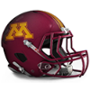
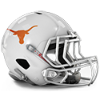
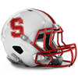

North Senior Bowl announced!The North has announced their Senior Bowl squad for 1984.
Ken O'Brien - QB, 302/468, 3866 yds, 42 TD
Bill Kenney - QB, 226/409, 3255 yds, 26 TD
Dave Krieg - QB, 223/345, 2793 yds, 29 TD
Greg Bell - RB, 221 att, 1201 yds, 17 TD, 17 rec, 105 yds, 0 TD
Lorenzo Hampton - RB, 209 att, 1252 yds, 17 TD, 7 rec, 79 yds, 1 TD
Marcus Allen - RB, 446 att, 1481 yds, 11 TD, 32 rec, 334 yds, 2 TD
Tony Paige - FB, 9 att, 10 yds, 7 TD, 9 rec, 34 yds, 0 TD
Max Montoya - G, 54 Pancakes
Dennis Harrah - G, 49 Pancakes
Joe DeLamielleure - G, 52 Pancakes
John Alt - T, 86 Pancakes
Cody Risien - T, 86 Pancakes
Mike Kenn - T, 83 Pancakes
Kirk Lowdermilk - C, 43 Pancakes
Guy Morriss - C, 41 Pancakes
Ozzie Newsome - TE, 59 rec, 810 yds, 9 TD
Mark Bavaro - TE, 48 rec, 725 yds, 6 TD
Stephone Paige - WR, 62 rec, 968 yds, 11 TD
Al Toon - WR, 70 rec, 904 yds, 11 TD
Art Monk - WR, 61 rec, 1112 yds, 7 TD
Roy Green - WR, 65 rec, 939 yds, 14 TD
Andre Reed - WR, 88 rec, 1231 yds, 6 TD
Willie Tullis - CB, 38 Tck, 4 Int, 1 Def TD, 1 FR
Terry Jackson - CB, 36 Tck, 1 Sck, 4 Int, 2 Def TD, 1 Blk FG
William Judson - CB, 59 Tck, 1 Sck, 3 Int, 1 Def TD, 1 FR
Jerry Robinson - LB, 84 Tck, 1 Sck, 4 Int, 1 Def TD, 1 FR
Clay Matthews - LB, 98 Tck, 1 Sck, 3 FR
Freddie Joe Nunn - LB, 86 Tck, 1 Sck, 1 Int, 1 Def TD, 2 FR
Jeff Schuh - LB, 72 Tck, 3 Sck, 1 Int, 1 FR
Ed Reynolds - LB, 96 Tck, 2 Sck, 2 Int, 1 Def TD, 1 FR
Jeff Rohrer - LB, 65 Tck, 1 Sck, 3 Int
Steve McMichael - DT, 41 Tck, 4 Sck
John Dutton - DT, 35 Tck, 3 Sck
Donnie Humphrey - DT, 31 Tck, 2 Sck
Mike Pitts - DT, 26 Tck, 2 Sck
Greg Brown - DE, 30 Tck, 8 Sck, 1 Def TD, 1 FR
Chris Doleman - DE, 82 Tck, 15 Sck
Bill Barnett - DE, 36 Tck, 7 Sck, 1 FR
Anthony Tuggle - FS, 62 Tck, 1 Sck, 3 Int, 1 Def TD, 1 FR
Mike Prior - FS, 78 Tck, 1 Sck, 4 Int
Dave Duerson - SS, 83 Tck, 5 Sck, 2 Int, 2 FR
Al Gross - SS, 62 Tck, 3 Sck, 1 Int, 3 FR
Morten Andersen - K, 31/37 FG
Rich Camarillo - P, 4488 yards, 44.9 avg, 47 inside 20South Senior Bowl announced!The South has announced their Senior Bowl squad for 1984.
Jim McMahon - QB, 233/345, 2896 yds, 28 TD
Dan Marino - QB, 103/168, 1783 yds, 21 TD
Ron Jaworski - QB, 139/289, 2488 yds, 17 TD
Ottis Anderson - RB, 228 att, 1169 yds, 14 TD, 8 rec, 34 yds, 0 TD
Darrin Nelson - RB, 324 att, 1369 yds, 7 TD, 15 rec, 67 yds, 0 TD
Eric Dickerson - RB, 257 att, 1195 yds, 3 TD, 24 rec, 184 yds, 0 TD
Kevin Mack - FB, 86 att, 491 yds, 8 TD, 43 rec, 351 yds, 0 TD
Roy Foster - G, 57 Pancakes
Russ Grimm - G, 49 Pancakes
Tom Thayer - G, 47 Pancakes
Ron Heller - T, 81 Pancakes
Mike Wilson - T, 77 Pancakes
Bruce Matthews - T, 67 Pancakes
Ray Donaldson - C, 47 Pancakes
Bart Oates - C, 50 Pancakes
James Wright - TE, 37 rec, 325 yds, 3 TD
Jonathan Hayes - TE, 47 rec, 397 yds, 3 TD
James Lofton - WR, 57 rec, 1170 yds, 14 TD
Jerry Rice - WR, 59 rec, 1536 yds, 20 TD
Anthony Carter - WR, 63 rec, 938 yds, 11 TD
Henry Ellard - WR, 76 rec, 1489 yds, 14 TD
Ken Margerum - WR, 67 rec, 887 yds, 6 TD
Ray Horton - CB, 76 Tck, 8 Int, 1 Def TD
Raymond Clayborn - CB, 74 Tck, 5 Int, 3 FR
Albert Lewis - CB, 73 Tck, 4 Int, 2 Def TD, 1 FR
Cliff Odom - LB, 67 Tck, 2 Sck, 2 Int, 2 FR
Karl Mecklenburg - LB, 102 Tck, 7 Sck, 2 Int, 1 Def TD, 1 FR
Ken Fantetti - LB, 87 Tck, 2 Int
Wilber Marshall - LB, 105 Tck, 1 Sck, 2 Int, 1 FR
John Anderson - LB, 69 Tck, 3 Sck, 2 Int, 1 Def TD, 1 FR
Brad Van Pelt - LB, 83 Tck, 4 Sck, 1 Int, 1 FR
Mike Charles - DT, 29 Tck, 2 Sck
Tim Newton - DT, 22 Tck, 5 Sck, 2 FR
Randy White - DT, 30 Tck, 4 Sck, 1 FR
Darryl Grant - DT, 27 Tck, 3 Sck, 1 Blk FG
Richard Dent - DE, 66 Tck, 9 Sck
Eddie Edwards - DE, 39 Tck, 5 Sck, 1 Sfty, 1 FR
George Martin - DE, 34 Tck, 7 Sck, 2 FR
Fred Marion - FS, 90 Tck, 2 Int, 1 Def TD
Reggie Phillips - FS, 55 Tck, 1 Sck, 3 Int, 1 Def TD
Steve Foley - SS, 74 Tck, 1 Sck, 3 Int
Elbert Foules - SS, 66 Tck, 3 Int, 2 FR
Fuad Reveiz - K, 25/35 FG
Carl Birdsong - P, 4335 yards, 44.7 avg, 37 inside 20Prestige UpdatesGained Prestige:
+ 1 : Alabama Crimson Tide
+ 1 : Clemson Tigers
+ 1 : Kings College London Regents
+ 1 : Texas Longhorns
+ 3 : West Virginia Mountaineers
+ 5 : Wisconsin Badgers
Lost Prestige:
-1 : California Golden Bears
-1 : Georgia Bulldogs
-1 : Minnesota Golden Gophers
-1 : Oregon Ducks
-2 : Cambridge Blues
-2 : Florida State Seminoles
-2 : Heidelberg Student Princes
-2 : Kentucky Wildcats
-2 : LSU Tigers
-2 : Oklahoma Sooners
-2 : Penn State Nittany Lions
-2 : Rutgers Scarlet Knights
-2 : Stanford Cardinal
-2 : Syracuse Orange
-3 : Navy Midshipmen
-3 : Notre Dame Fighting Irish
-3 : Ohio State Buckeyes
-3 : Texas A&M Aggies
1984 Ray Guy Award Award Minnesota Golden Gophers P, Rich Camarillo has won the Ray Guy Award award for 1984. 1984 Lou Groza Award Award Wisconsin Badgers K, Morten Andersen has won the Lou Groza Award award for 1984. Wisconsin Badgers K, Morten Andersen has won the Lou Groza Award award for 1984.
1984 Jim Thorpe Award Award Texas Longhorns CB, Ray Horton has won the Jim Thorpe Award award for 1984. 1984 Butkus Award AwardGeorgia Bulldogs LB, Ray Lewis has won the Butkus Award award for 1984.1984 Bednarik Award Award Northwestern Wildcats DE, Chris Doleman has won the Bednarik Award award for 1984. Northwestern Wildcats DE, Chris Doleman has won the Bednarik Award award for 1984.
1984 Outland Trophy Award UCLA Bruins T, Marcus McNeill has won the Outland Trophy award for 1984. UCLA Bruins T, Marcus McNeill has won the Outland Trophy award for 1984.
1984 John Mackey Award Award Otterbein Cardinals TE, Ozzie Newsome has won the John Mackey Award award for 1984. Otterbein Cardinals TE, Ozzie Newsome has won the John Mackey Award award for 1984.
1984 Biletnikoff Award Award Maryland Terrapins WR, Jerry Rice has won the Biletnikoff Award award for 1984. Maryland Terrapins WR, Jerry Rice has won the Biletnikoff Award award for 1984.
1984 Johnny Unitas Golden Arm Award Award Kings College London Regents QB, Ken O'Brien has won the Johnny Unitas Golden Arm Award award for 1984. Kings College London Regents QB, Ken O'Brien has won the Johnny Unitas Golden Arm Award award for 1984.
1984 Davey O'Brien Award AwardKings College London Regents QB, Ken O'Brien has won the Davey O'Brien Award award for 1984.1984 Doak Walker Award Award Oregon Ducks RB, Marcus Allen has won the Doak Walker Award award for 1984. Oregon Ducks RB, Marcus Allen has won the Doak Walker Award award for 1984.
1984 Bronko Nagurski Trophy AwardNorthwestern Wildcats DE, Chris Doleman has won the Bronko Nagurski Trophy award for 1984.1984 Walter Camp Award AwardMaryland Terrapins WR, Jerry Rice has won the Walter Camp Award award for 1984.1984 Heisman Trophy AwardMaryland Terrapins WR, Jerry Rice has won the Heisman Trophy award for 1984.Conference Players of the Year:----International Conference----
Defense:
Green, C. - CB, CAMB (35 Tck, 3 Int, 1 Def TD, 1 FR)
Offense:
Jerry Rice - WR, MD (59 rec, 1536 yds, 20 TD)
----Big Ten Conference----
Defense:
Judson, W. - CB, NW (59 Tck, 1 Sck, 3 Int, 1 Def TD, 1 FR)
Offense:
Drew Hill - WR, ND (69 rec, 1015 yds, 10 TD)
----Pacific 10 Conference----
Defense:
Horton, R. - CB, TEX (76 Tck, 8 Int, 1 Def TD)
Offense:
Eddie George - RB, UCLA (291 att, 1226 yds, 5 TD)
----Southeastern Conference----
Defense:
Lewis, A. - CB, MIA (73 Tck, 4 Int, 2 Def TD, 1 FR)
Offense:
O.J. Simpson - RB, WVU (280 att, 1548 yds, 21 TD, 8 rec, 53 yds, 0 TD)
All-American Team Announced1984 All-American Team
QB Ken O'Brien - Kings College London Regents (302/468, 3866 yds, 42 TD)
RB Marcus Allen - Oregon Ducks (446 att, 1481 yds, 11 TD, 32 rec, 334 yds, 2 TD)
FB Kevin Mack - UCLA Bruins (86 att, 491 yds, 8 TD, 43 rec, 351 yds, 0 TD)
TE Ozzie Newsome - Otterbein Cardinals (59 rec, 810 yds, 9 TD)
WR Jerry Rice - Maryland Terrapins (59 rec, 1536 yds, 20 TD)
C Bart Oates - Clemson Tigers (50 Pancakes)
G Marshal Yanda - Oklahoma Sooners (58 Pancakes)
T Marcus McNeill - UCLA Bruins (95 Pancakes)
DT John Jurkovic - Florida Gators (54 Tck, 8 Sck, 1 FR)
DE Chris Doleman - Northwestern Wildcats (82 Tck, 15 Sck)
LB Karl Mecklenburg - Stanford Cardinal (102 Tck, 7 Sck, 2 Int, 1 Def TD, 1 FR)
CB Ray Horton - Texas Longhorns (76 Tck, 8 Int, 1 Def TD)
SS Tory James - Maryland Terrapins (86 Tck, 2 Sck, 3 Int, 1 Def TD)
FS Mike Prior - Oregon Ducks (78 Tck, 1 Sck, 4 Int)
K Mason Crosby - Clemson Tigers (33/42 FG)
P Rich Camarillo - Minnesota Golden Gophers (4488 yards, 44.9 avg, 47 inside 20)Southeastern Conference All-Conference Team Announced1984 Southeastern Conference All-Conference Team.
QB Joe Montana - QB - West Virginia Mountaineers (228/389, 2617 yds, 20 TD)
RB O.J. Simpson - RB - West Virginia Mountaineers (280 att, 1548 yds, 21 TD, 8 rec, 53 yds, 0 TD)
FB Michael Haddix - FB - Georgia Bulldogs (23 att, 108 yds, 1 TD, 4 rec, 66 yds, 1 TD)
TE Jonathan Hayes - TE - Kentucky Wildcats (47 rec, 397 yds, 3 TD)
WR Marques Colston - WR - Georgia Bulldogs (55 rec, 1215 yds, 9 TD)
C Bart Oates - C - Clemson Tigers (50 Pancakes)
G Roy Foster - G - Alabama Crimson Tide (57 Pancakes)
T Ryan O'Callaghan - T - Georgia Bulldogs (89 Pancakes)
DT John Jurkovic - DT - Florida Gators (54 Tck, 8 Sck, 1 FR)
DE George Martin - DE - Auburn Tigers (34 Tck, 7 Sck, 2 FR)
LB Ray Lewis - LB - Georgia Bulldogs (114 Tck, 1 Sck, 2 Int, 1 Def TD, 4 FR)
CB Raymond Clayborn - CB - Clemson Tigers (74 Tck, 5 Int, 3 FR)
SS Elbert Foules - SS - LSU Tigers (66 Tck, 3 Int, 2 FR)
FS Tramon Williams - FS - Alabama Crimson Tide (66 Tck, 2 Sck, 1 Int, 1 FR)
K Mason Crosby - K - Clemson Tigers (33/42 FG)
P Carl Birdsong - P - Clemson Tigers (4335 yards, 44.7 avg, 37 inside 20)Pacific 10 Conference All-Conference Team Announced1984 Pacific 10 Conference All-Conference Team.
QB Jay Cutler - QB - Missouri Tigers (209/368, 2770 yds, 21 TD)
RB Marcus Allen - RB - Oregon Ducks (446 att, 1481 yds, 11 TD, 32 rec, 334 yds, 2 TD)
FB Kevin Mack - FB - UCLA Bruins (86 att, 491 yds, 8 TD, 43 rec, 351 yds, 0 TD)
TE Hoby Brenner - TE - Oregon Ducks (55 rec, 417 yds, 5 TD)
WR Henry Ellard - WR - Missouri Tigers (76 rec, 1489 yds, 14 TD)
C Ray Donaldson - C - California Golden Bears (47 Pancakes)
G Marshal Yanda - G - Oklahoma Sooners (58 Pancakes)
T Marcus McNeill - T - UCLA Bruins (95 Pancakes)
DT Russell Maryland - DT - California Golden Bears (44 Tck, 4 Sck)
DE Lee Williams - DE - Oregon Ducks (33 Tck, 4 Sck, 1 FR)
LB Karl Mecklenburg - LB - Stanford Cardinal (102 Tck, 7 Sck, 2 Int, 1 Def TD, 1 FR)
CB Ray Horton - CB - Texas Longhorns (76 Tck, 8 Int, 1 Def TD)
SS Lawyer Milloy - SS - Oregon Ducks (94 Tck, 2 Int, 2 FR)
FS Mike Prior - FS - Oregon Ducks (78 Tck, 1 Sck, 4 Int)
K Nick Folk - K - USC Trojans (28/32 FG)
P Jon Ryan - P - Texas A&M Aggies (3980 yards, 45.2 avg, 38 inside 20)Big Ten Conference All-Conference Team Announced1984 Big Ten Conference All-Conference Team.
QB Bill Kenney - QB - Illinois Fighting Illini (226/409, 3255 yds, 26 TD)
RB Lorenzo Hampton - RB - Wisconsin Badgers (209 att, 1252 yds, 17 TD, 7 rec, 79 yds, 1 TD)
FB Tuffy Leemans - FB - Michigan State Spartans (63 att, 247 yds, 10 TD, 17 rec, 71 yds, 0 TD)
TE J.J. Jansen - TE - Nebraska Cornhuskers (51 rec, 556 yds, 5 TD)
WR Mike Williams - WR - Northwestern Wildcats (65 rec, 1235 yds, 10 TD)
C George Trafton - C - Wisconsin Badgers (42 Pancakes)
G Max Montoya - G - Northwestern Wildcats (54 Pancakes)
T Pat Harlow - T - Northwestern Wildcats (81 Pancakes)
DT Johnny Jolly - DT - Northwestern Wildcats (33 Tck, 3 Sck)
DE Chris Doleman - DE - Northwestern Wildcats (82 Tck, 15 Sck)
LB Carlos Emmons - LB - Illinois Fighting Illini (80 Tck, 5 Sck, 2 Int, 2 FR)
CB Todd Scott - CB - Minnesota Golden Gophers (44 Tck, 7 Int, 1 Def TD, 4 FR)
SS Dave Duerson - SS - Ohio State Buckeyes (83 Tck, 5 Sck, 2 Int, 2 FR)
FS Anthony Tuggle - FS - Illinois Fighting Illini (62 Tck, 1 Sck, 3 Int, 1 Def TD, 1 FR)
K Morten Andersen - K - Wisconsin Badgers (31/37 FG)
P Rich Camarillo - P - Minnesota Golden Gophers (4488 yards, 44.9 avg, 47 inside 20)International Conference All-Conference Team Announced1984 International Conference All-Conference Team.
QB Ken O'Brien - QB - Kings College London Regents (302/468, 3866 yds, 42 TD)
RB Greg Bell - RB - Rutgers Scarlet Knights (221 att, 1201 yds, 17 TD, 17 rec, 105 yds, 0 TD)
FB Harold Morrow - FB - Maryland Terrapins (41 att, 84 yds, 0 TD, 2 rec, 25 yds, 1 TD)
TE Ozzie Newsome - TE - Otterbein Cardinals (59 rec, 810 yds, 9 TD)
WR Jerry Rice - WR - Maryland Terrapins (59 rec, 1536 yds, 20 TD)
C Nick Mangold - C - Maryland Terrapins (45 Pancakes)
G John Hannah - G - Cambridge Blues (51 Pancakes)
T Cody Risien - T - Kings College London Regents (86 Pancakes)
DT Haloti Ngata - DT - Heidelberg Student Princes (48 Tck, 16 Sck, 1 FR)
DE Mario Williams - DE - Rutgers Scarlet Knights (83 Tck, 9 Sck)
LB Jerry Robinson - LB - Cambridge Blues (84 Tck, 1 Sck, 4 Int, 1 Def TD, 1 FR)
CB Willie Tullis - CB - Otterbein Cardinals (38 Tck, 4 Int, 1 Def TD, 1 FR)
SS Tory James - SS - Maryland Terrapins (86 Tck, 2 Sck, 3 Int, 1 Def TD)
FS Fred Marion - FS - Navy Midshipmen (90 Tck, 2 Int, 1 Def TD)
K K FILLER - K - Rutgers Scarlet Knights (23/35 FG)
P Shawn McCarthy - P - Cambridge Blues (3585 yards, 42.2 avg, 36 inside 20)Postseason: DE Ezra Johnson (ILL) has suffered a major injury! Illinois Fighting Illini's defensive end Ezra Johnson has been diagnosed with a Concussion. "His determination to return is commendable," said the coaching staff in a recent statement. Illinois Fighting Illini's defensive end Ezra Johnson has been diagnosed with a Concussion. "His determination to return is commendable," said the coaching staff in a recent statement.
Bowl Games Recruiting Update1 players committed this week.
5 star players committed this week: 0.
4 star players committed this week: 0.
3 star players committed this week: 1.
2 star players committed this week: 0.
1 star players committed this week: 0.
0 players ranked in the top 100 recruits committed this week.
The most highly touted prospect committing this week was DE FILLER (a 3 star DE from SCHUYLKILL VALLEY HS ranked at #367) who committed to Florida State.
Southeastern Conference was the conference that netted the most recruits this week with a total of 1.
Florida State Seminoles locked down the most prospects this week was as they got 1 recruits to sign.
The highest ranked uncommitted recruit is Tariq Woolen - CB. He is ranked at #2
Total Recruits committed this season is 860.Bowl Games Recruiting Update1 players committed this week.
5 star players committed this week: 0.
4 star players committed this week: 0.
3 star players committed this week: 1.
2 star players committed this week: 0.
1 star players committed this week: 0.
0 players ranked in the top 100 recruits committed this week.
The most highly touted prospect committing this week was DE FILLER (a 3 star DE from HARTFORD HS ranked at #386) who committed to Texas.
Pacific 10 Conference was the conference that netted the most recruits this week with a total of 1.
Texas Longhorns locked down the most prospects this week was as they got 1 recruits to sign.
The highest ranked uncommitted recruit is Tariq Woolen - CB. He is ranked at #2
Total Recruits committed this season is 859.Bowl Games Recruiting Update6 players committed this week.
5 star players committed this week: 1.
4 star players committed this week: 0.
3 star players committed this week: 5.
2 star players committed this week: 0.
1 star players committed this week: 0.
1 players ranked in the top 100 recruits committed this week.
The most highly touted prospect committing this week was Dick LeBeau (a 5 star CB from ALONSO HS ranked at #8) who committed to Ohio State.
Pacific 10 Conference was the conference that netted the most recruits this week with a total of 3.
Ohio State Buckeyes locked down the most prospects this week was as they got 1 recruits to sign.
The highest ranked uncommitted recruit is Tariq Woolen - CB. He is ranked at #2
Total Recruits committed this season is 858.Dick LeBeau - CB commits to Ohio State. Dick LeBeau has committed to the Buckeyes. Dick LeBeau has committed to the Buckeyes.
LeBeau is widely considered to be one of the top ten prospects in this years recruiting class, and a lot of eyes have been on the CB from ALONSO HS.
LeBeau was also pursued by Maryland Terrapins, Clemson Tigers, Kentucky Wildcats, West Virginia Mountaineers, Missouri Tigers, Auburn Tigers, Alabama Crimson Tide, Navy Midshipmen, Army Black Knights, Illinois Fighting Illini, Miami (FL) Hurricanes, California Golden Bears, Kings College London Regents, and Texas Longhorns.
Bowl Games Recruiting Update5 players committed this week.
5 star players committed this week: 0.
4 star players committed this week: 0.
3 star players committed this week: 5.
2 star players committed this week: 0.
1 star players committed this week: 0.
0 players ranked in the top 100 recruits committed this week.
The most highly touted prospect committing this week was CB FILLER (a 3 star CB from HART HS ranked at #504) who committed to Navy.
International Conference was the conference that netted the most recruits this week with a total of 2.
Navy Midshipmen locked down the most prospects this week was as they got 1 recruits to sign.
The highest ranked uncommitted recruit is Tariq Woolen - CB. He is ranked at #2
Total Recruits committed this season is 852.Bowl Games Recruiting Update22 players committed this week.
5 star players committed this week: 0.
4 star players committed this week: 1.
3 star players committed this week: 21.
2 star players committed this week: 0.
1 star players committed this week: 0.
0 players ranked in the top 100 recruits committed this week.
The most highly touted prospect committing this week was Derion Kendrick (a 4 star CB from GONZALES HS ranked at #143) who committed to Texas.
Big Ten Conference was the conference that netted the most recruits this week with a total of 7.
Nebraska Cornhuskers locked down the most prospects this week was as they got 2 recruits to sign.
The highest ranked uncommitted recruit is Tariq Woolen - CB. He is ranked at #2
Total Recruits committed this season is 847.Week 14 Recruiting Update52 players committed this week.
5 star players committed this week: 0.
4 star players committed this week: 5.
3 star players committed this week: 47.
2 star players committed this week: 0.
1 star players committed this week: 0.
1 players ranked in the top 100 recruits committed this week.
The most highly touted prospect committing this week was Jake Ferguson (a 4 star TE from CALVINE HS ranked at #68) who committed to Clemson.
Big Ten Conference was the conference that netted the most recruits this week with a total of 16.
Kings College London Regents locked down the most prospects this week was as they got 4 recruits to sign.
The highest ranked uncommitted recruit is Tariq Woolen - CB. He is ranked at #2
Total Recruits committed this season is 825.Keith Simpson - FS (CLEM) proud after praise from coaching staff.Keith Simpson - FS (CLEM) was all smiles when discussing the praise by Frank Leahy (HC) in a recent interview. The respect between Simpson and HC Leahy is high. Praise by the coach and how well this was recieved by Simpson is testament to that.Washington, Chris (PSU) humbled by praise from Pete Carroll (HC).Chris Washington - LB (PSU) was all smiles when discussing the praise by Pete Carroll (HC) in a recent interview. Washington was proud of his recent performance and appreciated the statement from Head Coach Carroll.Prestige UpdatesPrestige Changes for week 14
Losses:
Florida State Seminoles got trampled by the West Virginia Mountaineers : Prestige loss - 0.05International Conference News: Top receiver trio?The Regents trio of Calvin Johnson - WR, Stephone Paige - WR and Al Toon - WR are currently the leading trio of receivers in the league, with 36 receiving touchdowns between the three.Week 14: WR Mike Williams (NW) wins Offensive Player of the WeekWilliams's 6 rec, 234 yds, 3 TD effort led the way for the Northwestern Wildcats. This weeks 234 receiving yards bring his season total to 1181 yards with 10 touchdowns on the season.
"To Mike, football is about winning and nothing else. He is one of the hardest workers on our team and deserves the attention he is getting from the media and fans." - Wildcats Coach
Northwestern Wildcats prestige bonus + 0.05Week 14: CB Lester Hayes (OK) wins Defensive Player of the Week CB Hayes's ball hawking ability was on display in the Tigers 31-24 game with the Oklahoma Sooners. He finished with 7 Tck, 1 Int, 1 Def TD. CB Hayes's ball hawking ability was on display in the Tigers 31-24 game with the Oklahoma Sooners. He finished with 7 Tck, 1 Int, 1 Def TD.
"Lester has the unique ability to make plays and generate turnovers." -Sooners Defensive Coordinator
Oklahoma Sooners prestige bonus + 0.05
Week 14 : Conference Players of the WeekInternational Conference Defensive player of the week: Tommy Nobis - LB, KCL.
International Conference Offensive player of the week: Ken O'Brien - QB, KCL.
Big Ten Conference Defensive player of the week: Al Gross - SS, WIS.
Big Ten Conference Offensive player of the week: Mike Williams - WR, NW.
Pacific 10 Conference Defensive player of the week: Lester Hayes - CB, OK.
Pacific 10 Conference Offensive player of the week: Darrin Nelson - RB, USC.
Southeastern Conference Defensive player of the week: Mike Mickens - CB, AUB.
Southeastern Conference Offensive player of the week: George Rogers - RB, FLA.
Game Recaps for Week 14Navy Midshipmen - 41, Army Black Knights - 20
Rutgers Scarlet Knights - 44, Syracuse Orange - 17
Otterbein Cardinals - 55, Heidelberg Student Princes - 21
Maryland Terrapins - 20, Penn State Nittany Lions - 10
Kings College London Regents - 34, Cambridge Blues - 17
Michigan State Spartans - 23, Notre Dame Fighting Irish - 13
Iowa Hawkeyes - 17, Nebraska Cornhuskers - 12
Michigan Wolverines - 43, Ohio State Buckeyes - 28
Wisconsin Badgers - 45, Minnesota Golden Gophers - 0
Northwestern Wildcats - 41, Illinois Fighting Illini - 16
Stanford Cardinal - 24, California Golden Bears - 10
Missouri Tigers - 31, Oklahoma Sooners - 24
Texas Longhorns - 41, Texas A&M Aggies - 14
Oregon Ducks - 29, Washington Huskies - 26
USC Trojans - 40, UCLA Bruins - 7
Clemson Tigers - 27, Georgia Bulldogs - 17
West Virginia Mountaineers - 26, Kentucky Wildcats - 17
Alabama Crimson Tide - 54, Auburn Tigers - 14
LSU Tigers - 10, Miami (FL) Hurricanes - 3
Florida Gators - 47, Florida State Seminoles - 3Week 14 Recruiting Update120 players committed this week.
5 star players committed this week: 8.
4 star players committed this week: 7.
3 star players committed this week: 105.
2 star players committed this week: 0.
1 star players committed this week: 0.
11 players ranked in the top 100 recruits committed this week.
The most highly touted prospect committing this week was Cam Taylor-Britt (a 5 star CB from RENAISSANCE HS ranked at #13) who committed to Clemson.
Big Ten Conference was the conference that netted the most recruits this week with a total of 38.
Notre Dame Fighting Irish locked down the most prospects this week was as they got 6 recruits to sign.
The highest ranked uncommitted recruit is Tariq Woolen - CB. He is ranked at #2
Total Recruits committed this season is 773.Hinton, Chris (SYR) basks in praise from Bob Devaney (HC).Recent praise from Bob Devaney (HC) is the talk of the day, and now Chris Hinton - T (SYR) replied. Hinton acknowledged the praise from his coach, but clearly stated that he thinks he has more to offer.Prestige UpdatesPrestige Changes for week 14
Losses:
Florida State Seminoles got trampled by the West Virginia Mountaineers : Prestige loss - 0.05Miami (FL) Hurricanes take the prize. Miami (FL) is the league leader in turnover differential. With their offense only turning the ball over 10 times (5 interceptions and 5 fumbles), while their defense has delivered 32 takeaways (15 interceptions and 17 fumbles recovered). Miami (FL) is the league leader in turnover differential. With their offense only turning the ball over 10 times (5 interceptions and 5 fumbles), while their defense has delivered 32 takeaways (15 interceptions and 17 fumbles recovered).
This gives them a turnover differential of +22.
Top 10 turnover differentials:
Miami (FL) Hurricanes: 22
USC Trojans: 21
Illinois Fighting Illini: 18
Clemson Tigers: 16
Rutgers Scarlet Knights: 15
Wisconsin Badgers: 15
LSU Tigers: 15
Cambridge Blues: 13
Notre Dame Fighting Irish: 13
Michigan Wolverines: 12
At the bottom of the league, we find Oklahoma Sooners, who clock in with an atrocious differential of -7.
Miami (FL) Hurricanes prestige bonus + 0.05
Minnesota Golden Gophers pull off the upset!The Minnesota Golden Gophers surprises everyone with an unlikely road win against Illinois Fighting Illini.
The Fighting Illini never manage to take control of the game, while the Golden Gophers kept grinding and drove the victory home. The Fighting Illini players had expected an easy victory, and this will be a bitter loss and a tough blow to the self-respect of the program. Meanwhile the Golden Gophers fans are ecstatic and are already entertaining thoughts about a cinderella future.Florida State Seminoles resigns Shug Jordan as Offensive Coordinator The Seminoles have announced that they have given Shug Jordan a new contract. Jordan will continue to serve as OffensiveCoordinator for 5 years earning 2.5 million per year. The Seminoles have announced that they have given Shug Jordan a new contract. Jordan will continue to serve as OffensiveCoordinator for 5 years earning 2.5 million per year.
Texas Longhorns resigns Chris Canty as DB CoachThe Longhorns have announced that they have given Chris Canty a new contract. Canty will continue to serve as DBCoach for 4 years earning 0.5 million per year.UCLA Bruins resigns Sean Taylor as DB CoachThe Bruins have announced that they have given Sean Taylor a new contract. Taylor will continue to serve as DBCoach for 7 years earning 0.5 million per year.UCLA Bruins resigns Barry Switzer as Head CoachThe Bruins have announced that they have given Barry Switzer a new contract. Switzer will continue to serve as HeadCoach for 6 years earning 4 million per year.Heidelberg Student Princes resigns Antonio Langham as DB Coach The Student Princes have announced that they have given Antonio Langham a new contract. Langham will continue to serve as DBCoach for 4 years earning 0.5 million per year. The Student Princes have announced that they have given Antonio Langham a new contract. Langham will continue to serve as DBCoach for 4 years earning 0.5 million per year.
Carter: The DivaA Frustrated Trojans player has revealed that coaches are growing tired of having to baby Anthony Carter - WR. There is always some thing, he needs to be done a little differently.
USC Trojans prestige penalty - 0.05Week 13: WR Marvin Harrison (WVU) wins Offensive Player of the Week Harrison's 4 rec, 137 yds, 3 TD effort led the way for the West Virginia Mountaineers. His 137 receiving yards bring his season total to 873 yards with 8 touchdowns on the season. Harrison's 4 rec, 137 yds, 3 TD effort led the way for the West Virginia Mountaineers. His 137 receiving yards bring his season total to 873 yards with 8 touchdowns on the season.
West Virginia Mountaineers prestige bonus + 0.05
Week 13: CB Albert Lewis (MIA) wins Defensive Player of the WeekIn an exhilarating matchup during Week 13, Miami (FL) Hurricanes's Albert Lewis showcased his talent, achieving 2 interceptions and 6 tackles against Kentucky Wildcats. His efforts were vital to the Hurricanes's success. Lewis has accumulated 4 interceptions this season, proving his prowess since being signed in 0.
Miami (FL) Hurricanes prestige bonus + 0.05Week 13 : Conference Players of the WeekInternational Conference Defensive player of the week: Dextor Clinkscale - SS, HEI.
International Conference Offensive player of the week: Stephone Paige - WR, KCL.
Big Ten Conference Defensive player of the week: Greg Brown - DE, MINN.
Big Ten Conference Offensive player of the week: Terry Glenn - WR, MINN.
Pacific 10 Conference Defensive player of the week: Dave Edwards - CB, USC.
Pacific 10 Conference Offensive player of the week: Joe Horn - WR, USC.
Southeastern Conference Defensive player of the week: Albert Lewis - CB, MIA.
Southeastern Conference Offensive player of the week: Marvin Harrison - WR, WVU.
Game Recaps for Week 13Northwestern Wildcats - 27, Nebraska Cornhuskers - 20
Maryland Terrapins - 17, Cambridge Blues - 14
Miami (FL) Hurricanes - 33, Kentucky Wildcats - 9
Florida Gators - 37, LSU Tigers - 27
Washington Huskies - 35, Oklahoma Sooners - 14
Wisconsin Badgers - 12, Iowa Hawkeyes - 0
West Virginia Mountaineers - 48, Florida State Seminoles - 10
Missouri Tigers - 23, UCLA Bruins - 16
Rutgers Scarlet Knights - 24, Heidelberg Student Princes - 17
Minnesota Golden Gophers - 38, Illinois Fighting Illini - 28
Kings College London Regents - 31, Syracuse Orange - 24
USC Trojans - 30, Oregon Ducks - 20Week 13 Recruiting Update123 players committed this week.
5 star players committed this week: 8.
4 star players committed this week: 29.
3 star players committed this week: 86.
2 star players committed this week: 0.
1 star players committed this week: 0.
19 players ranked in the top 100 recruits committed this week.
The most highly touted prospect committing this week was Derek Stingley Jr (a 5 star CB from SUNRAY HS ranked at #7) who committed to Michigan State.
Big Ten Conference was the conference that netted the most recruits this week with a total of 35.
LSU Tigers locked down the most prospects this week was as they got 6 recruits to sign.
The highest ranked uncommitted recruit is Tariq Woolen - CB. He is ranked at #2
Total Recruits committed this season is 653.Derek Stingley Jr - CB commits to Michigan State. Derek Stingley Jr has committed to the Spartans. Derek Stingley Jr has committed to the Spartans.
Stingley Jr is widely considered to be one of the top ten prospects in this years recruiting class, and a lot of eyes have been on the CB from SUNRAY HS.
Stingley Jr was also pursued by Oklahoma Sooners, Georgia Bulldogs, Ohio State Buckeyes, Miami (FL) Hurricanes, Army Black Knights, and Notre Dame Fighting Irish.
Tyler Smith - G commits to Stanford. Tyler Smith has committed to the Cardinal. Smith is widely considered to be one of the top ten prospects in this years recruiting class, and a lot of eyes have been on the G from CENTRAL BUCKS WEST HS. Smith was also pursued by Maryland Terrapins, Michigan State Spartans, Rutgers Scarlet Knights, Nebraska Cornhuskers, Navy Midshipmen, Clemson Tigers, Michigan Wolverines, Missouri Tigers, Oregon Ducks, and Syracuse Orange. Southeastern Conference News: Florida Gators: A no Pass Zone. Gators pass defense this year has been dynamite this season, giving up only 1543 in 10 games. Said one member of the defensive backfield, ‘It’s like blood in the water when that ball goes in the air. We all turn into sharks. The scary kind, that jump outta the water and stuff.’. Gators pass defense this year has been dynamite this season, giving up only 1543 in 10 games. Said one member of the defensive backfield, ‘It’s like blood in the water when that ball goes in the air. We all turn into sharks. The scary kind, that jump outta the water and stuff.’.
Missouri Tigers resigns Mike Taylor as LB Coach The Tigers have announced that they have given Mike Taylor a new contract. Taylor will continue to serve as LBCoach for 5 years earning 0.5 million per year. The Tigers have announced that they have given Mike Taylor a new contract. Taylor will continue to serve as LBCoach for 5 years earning 0.5 million per year.
Washington Huskies resigns Bennie Oosterbaan as Special Teams Coach The Huskies have announced that they have given Bennie Oosterbaan a new contract. Oosterbaan will continue to serve as SpecialTeamsCoach for 5 years earning 0.5 million per year. The Huskies have announced that they have given Bennie Oosterbaan a new contract. Oosterbaan will continue to serve as SpecialTeamsCoach for 5 years earning 0.5 million per year.
Stanford Cardinal resigns Les Horvath as QB CoachThe Cardinal have announced that they have given Les Horvath a new contract. Horvath will continue to serve as QBCoach for 5 years earning 0.5 million per year.Michigan Wolverines resigns Keith Byars as RB and Receivers Coach The Wolverines have announced that they have given Keith Byars a new contract. Byars will continue to serve as SkillPositionCoach for 6 years earning 0.5 million per year. The Wolverines have announced that they have given Keith Byars a new contract. Byars will continue to serve as SkillPositionCoach for 6 years earning 0.5 million per year.
Heidelberg Student Princes resigns Greg Eslinger as OL CoachThe Student Princes have announced that they have given Greg Eslinger a new contract. Eslinger will continue to serve as OLCoach for 6 years earning 0.5 million per year.Week 12: WR Calvin Johnson (KCL) wins Offensive Player of the WeekCalvin Johnson had an electrifying game with 2 touchdowns and 181 yards, leading Kings College London Regents past Army Black Knights with a score of 56-28.
Kings College London Regents prestige bonus + 0.05Week 12: CB Darrelle Revis (WIS) wins Defensive Player of the WeekIn an exhilarating matchup during Week 12, Wisconsin Badgers's Darrelle Revis showcased his talent, achieving 1 interceptions and 7 tackles against Michigan Wolverines. His efforts were vital to the Badgers's success. Revis has accumulated 1 interceptions this season, proving his prowess since being signed in 1984.
Wisconsin Badgers prestige bonus + 0.05Week 12 : Conference Players of the WeekInternational Conference Defensive player of the week: Woodrow Lowe - LB, KCL.
International Conference Offensive player of the week: Calvin Johnson - WR, KCL.
Big Ten Conference Defensive player of the week: Darrelle Revis - CB, WIS.
Big Ten Conference Offensive player of the week: Mike Williams - WR, NW.
Pacific 10 Conference Defensive player of the week: Demetrious Johnson - SS, USC.
Pacific 10 Conference Offensive player of the week: Kevin Mack - FB, UCLA.
Southeastern Conference Defensive player of the week: Parys Haralson - DE, FSU.
Southeastern Conference Offensive player of the week: O.J. Simpson - RB, WVU.
Game Recaps for Week 12Otterbein Cardinals - 24, Penn State Nittany Lions - 3
Kings College London Regents - 56, Army Black Knights - 28
Northwestern Wildcats - 27, Michigan State Spartans - 3
Notre Dame Fighting Irish - 41, Nebraska Cornhuskers - 7
Rutgers Scarlet Knights - 24, Cambridge Blues - 19
Miami (FL) Hurricanes - 17, Auburn Tigers - 7
Florida Gators - 36, Kentucky Wildcats - 16
Washington Huskies - 26, Texas Longhorns - 16
Wisconsin Badgers - 30, Michigan Wolverines - 13
Georgia Bulldogs - 23, Florida State Seminoles - 20
UCLA Bruins - 27, California Golden Bears - 20
West Virginia Mountaineers - 34, Clemson Tigers - 26
Stanford Cardinal - 20, Missouri Tigers - 13
Maryland Terrapins - 24, Heidelberg Student Princes - 3
Illinois Fighting Illini - 18, Iowa Hawkeyes - 14
Syracuse Orange - 27, Navy Midshipmen - 24
USC Trojans - 17, Oklahoma Sooners - 10Week 12: G Kasey Studdard (NW) has suffered a major injury!The Northwestern Wildcats' G Kasey Studdard has suffered an injury: Broken Wrist, Status: Out (8-12 weeks).Recruiting Watch With Darren Francis: Jack Sanborn - LBHey football devotees. It is time for another edition of Recruiting Watch With Darren Francis. In this rendition, we do a report card on Jack Sanborn - LB. Sanborn is a LB, out of POWAY HS, CA. His ranking of 96 nationally, makes him a 4 star recruit. He weighs in at 234 pounds, is 6' 2" tall, at the age of 19. Alright, let us get down to business!
Known for showing up early and staying late. Has sufficient strength to play with the big boys in the pros. Reliably makes the right decision on the field.
A hot prospect, and a star coming out of high school, Jack Sanborn has plenty of suitors. His high school gave the following list of who had officially contacted them: Florida State Seminoles, Oregon Ducks, USC Trojans, Iowa Hawkeyes, Missouri Tigers, Oklahoma Sooners, California Golden Bears, UCLA Bruins, Notre Dame Fighting Irish, Stanford Cardinal, Washington Huskies, Wisconsin Badgers.
Sanborn had no comment, when asked recently about where he planned to play next year. Week 12 Recruiting Update146 players committed this week.
5 star players committed this week: 10.
4 star players committed this week: 52.
3 star players committed this week: 84.
2 star players committed this week: 0.
1 star players committed this week: 0.
26 players ranked in the top 100 recruits committed this week.
The most highly touted prospect committing this week was Sauce Gardner (a 5 star CB from CAPTAIN SHREVE HS ranked at #1) who committed to Oklahoma.
International Conference was the conference that netted the most recruits this week with a total of 40.
Washington Huskies locked down the most prospects this week was as they got 7 recruits to sign.
The highest ranked uncommitted recruit is Tariq Woolen - CB. He is ranked at #2
Total Recruits committed this season is 530.Jalen Pitre - FS commits to Stanford.Jalen Pitre has committed to the Cardinal.
Pitre is widely considered to be one of the top ten prospects in this years recruiting class, and a lot of eyes have been on the FS from WOODROW WILSON HS.
Pitre was also pursued by Nebraska Cornhuskers, Georgia Bulldogs, Michigan State Spartans, Notre Dame Fighting Irish, Wisconsin Badgers, California Golden Bears, and Alabama Crimson Tide.Trent McDuffie - CB commits to Maryland.Trent McDuffie has committed to the Terrapins.
McDuffie is widely considered to be one of the top ten prospects in this years recruiting class, and a lot of eyes have been on the CB from G.W. CARVER HS.
McDuffie was also pursued by LSU Tigers, Rutgers Scarlet Knights, Georgia Bulldogs, and Stanford Cardinal.Sauce Gardner - CB commits to Oklahoma.Sauce Gardner has committed to the Sooners.
Gardner is widely considered to be one of the top ten prospects in this years recruiting class, and a lot of eyes have been on the CB from CAPTAIN SHREVE HS.
Gardner was also pursued by Rutgers Scarlet Knights, Nebraska Cornhuskers, and Maryland Terrapins.Jordan Davis - DT commits to Maryland.Jordan Davis has committed to the Terrapins.
Davis is widely considered to be one of the top ten prospects in this years recruiting class, and a lot of eyes have been on the DT from MADISON HS.
Davis was also pursued by Penn State Nittany Lions, Rutgers Scarlet Knights, Florida Gators, Oklahoma Sooners, Stanford Cardinal, Nebraska Cornhuskers, Georgia Bulldogs, Michigan State Spartans, Clemson Tigers, Michigan Wolverines, Oregon Ducks, Miami (FL) Hurricanes, Notre Dame Fighting Irish, Florida State Seminoles, Texas Longhorns, Texas A&M Aggies, Wisconsin Badgers, Ohio State Buckeyes, USC Trojans, Cambridge Blues, and Illinois Fighting Illini.Wilson, Otis (ILL) praised by coaches.Otis Wilson - LB (ILL) was all smiles when discussing the praise by Bobby Dodd (HC) in a recent interview. Bobby Dodd (HC) getting along well with Wilson. The player stated he was recently humbled and honored by praise from the coach.Prestige UpdatesPrestige Changes for week 12
Losses:
Army Black Knights got humiliated by the Rutgers Scarlet Knights : Prestige loss - 0.05
UCLA Bruins was walked all over by the Oregon Ducks : Prestige loss - 0.05International Conference News: Rutgers Scarlet Knights defense dominates! The Scarlet Knights' defense is beating the brakes off people this season. In 9 games they’ve allowed only 2986 total yards and 211 points. Randall Godfrey - LB is the Bell Cow of the defense with 76 tackles on the year. Could the Scarlet Knights become a defining defense for the league? The Scarlet Knights' defense is beating the brakes off people this season. In 9 games they’ve allowed only 2986 total yards and 211 points. Randall Godfrey - LB is the Bell Cow of the defense with 76 tackles on the year. Could the Scarlet Knights become a defining defense for the league?
Kentucky Wildcats upset the Georgia Bulldogs! With an outstanding effort the Kentucky Wildcats pull off the upset against Georgia Bulldogs. With an outstanding effort the Kentucky Wildcats pull off the upset against Georgia Bulldogs.
Everyone had expected the Georgia Bulldogs to handle the Kentucky Wildcats with ease, but the Wildcats just wanted it more. This was really a must win game for the Bulldogs, and the loss will surely put a dent in their confidence.
Auburn Tigers resigns Steve Owens as RB and Receivers Coach The Tigers have announced that they have given Steve Owens a new contract. Owens will continue to serve as SkillPositionCoach for 5 years earning 0.5 million per year. The Tigers have announced that they have given Steve Owens a new contract. Owens will continue to serve as SkillPositionCoach for 5 years earning 0.5 million per year.
Florida State Seminoles resigns Billy Nicks as Defensive CoordinatorThe Seminoles have announced that they have given Billy Nicks a new contract. Nicks will continue to serve as DefensiveCoordinator for 3 years earning 2 million per year.Missouri Tigers resigns Scott Appleton as OL CoachThe Tigers have announced that they have given Scott Appleton a new contract. Appleton will continue to serve as OLCoach for 2 years earning 0.5 million per year.Washington Huskies resigns Biggie Munn as Offensive CoordinatorThe Huskies have announced that they have given Biggie Munn a new contract. Munn will continue to serve as OffensiveCoordinator for 4 years earning 2 million per year.Iowa Hawkeyes resigns Randy Wright as QB Coach The Hawkeyes have announced that they have given Randy Wright a new contract. Wright will continue to serve as QBCoach for 3 years earning 0.5 million per year. The Hawkeyes have announced that they have given Randy Wright a new contract. Wright will continue to serve as QBCoach for 3 years earning 0.5 million per year.
Iowa Hawkeyes resigns Fisher DeBerry as Defensive CoordinatorThe Hawkeyes have announced that they have given Fisher DeBerry a new contract. DeBerry will continue to serve as DefensiveCoordinator for 4 years earning 2.5 million per year.Syracuse Orange resigns Irving Fryar as RB and Receivers Coach The Orange have announced that they have given Irving Fryar a new contract. Fryar will continue to serve as SkillPositionCoach for 6 years earning 0.5 million per year. The Orange have announced that they have given Irving Fryar a new contract. Fryar will continue to serve as SkillPositionCoach for 6 years earning 0.5 million per year.
Syracuse Orange resigns Howard Schnellenberger as Head TrainerThe Orange have announced that they have given Howard Schnellenberger a new contract. Schnellenberger will continue to serve as HeadTrainer for 2 years earning 0.5 million per year.Heidelberg Student Princes resigns Ken Swilling as Head TrainerThe Student Princes have announced that they have given Ken Swilling a new contract. Swilling will continue to serve as HeadTrainer for 4 years earning 0.5 million per year.Army Black Knights resigns Danny Noonan as DL Coach The Black Knights have announced that they have given Danny Noonan a new contract. Noonan will continue to serve as DLCoach for 6 years earning 1 million per year. The Black Knights have announced that they have given Danny Noonan a new contract. Noonan will continue to serve as DLCoach for 6 years earning 1 million per year.
Meet media's new darling: Jim McMahon - QB. Anyone who has recently turned on their television in MD have seen his face. It seems like the local media is going cannot get enough of Jim McMahon - QB. The media presense of Jim McMahon - QB is really taking off. His recent interviews have gathered a lot of viewers, and the Midshipmen are enjoying a surge in media coverage and requests. Most people expect McMahon to leverage his newfound media following into endorsement deals and possibly a new contract with the Midshipmen. Anyone who has recently turned on their television in MD have seen his face. It seems like the local media is going cannot get enough of Jim McMahon - QB. The media presense of Jim McMahon - QB is really taking off. His recent interviews have gathered a lot of viewers, and the Midshipmen are enjoying a surge in media coverage and requests. Most people expect McMahon to leverage his newfound media following into endorsement deals and possibly a new contract with the Midshipmen.
Navy Midshipmen prestige bonus + 0.05
Week 11: RB Marcus Allen (ORE) wins Offensive Player of the WeekThe star of the game was Marcus Allen from Oregon Ducks, who rushed for 184 yards and scored 4 touchdowns, leading to a convincing 54-10 win over UCLA Bruins. His explosive performance earned him the prestigious Offensive Player of the Week award.
Oregon Ducks prestige bonus + 0.05Week 11: SS Tory James (MD) wins Defensive Player of the WeekSS Tory James of the Maryland Terrapins has earned the Defensive Player of the Week award. James finished with 9 Tck, 2 Int, 1 Def TD.
Maryland Terrapins prestige bonus + 0.05Week 11 : Conference Players of the WeekInternational Conference Defensive player of the week: Tory James - SS, MD.
International Conference Offensive player of the week: Willie Gault - WR, RUT.
Big Ten Conference Defensive player of the week: Todd Scott - CB, MINN.
Big Ten Conference Offensive player of the week: Terry Allen - RB, IOWA.
Pacific 10 Conference Defensive player of the week: Eric Williams - DE, STAN.
Pacific 10 Conference Offensive player of the week: Marcus Allen - RB, ORE.
Southeastern Conference Defensive player of the week: Eric Smedley - CB, LSU.
Southeastern Conference Offensive player of the week: O.J. Simpson - RB, WVU.
Game Recaps for Week 11Oklahoma Sooners - 37, California Golden Bears - 21
Rutgers Scarlet Knights - 65, Army Black Knights - 7
Iowa Hawkeyes - 31, Michigan State Spartans - 17
Penn State Nittany Lions - 26, Navy Midshipmen - 23
Maryland Terrapins - 23, Kings College London Regents - 13
Kentucky Wildcats - 20, Georgia Bulldogs - 17
Wisconsin Badgers - 23, Nebraska Cornhuskers - 20
Alabama Crimson Tide - 14, Clemson Tigers - 7
Ohio State Buckeyes - 23, Notre Dame Fighting Irish - 16
Minnesota Golden Gophers - 34, Northwestern Wildcats - 14
LSU Tigers - 38, Florida State Seminoles - 9
Stanford Cardinal - 30, Texas A&M Aggies - 12
Oregon Ducks - 54, UCLA Bruins - 10
West Virginia Mountaineers - 30, Miami (FL) Hurricanes - 7
Missouri Tigers - 41, Washington Huskies - 14
Syracuse Orange - 35, Heidelberg Student Princes - 22Recruiting Watch With Darren Francis: Greg Dulcich - TEHello my fellow football lovers. I am happy to deliver another round of analysis in this edition of Recruiting Watch With Darren Francis. Here I present Greg Dulcich - TE. Dulcich is an accomplished TE, and star of the LINCOLN COUNTY HS (WV) football program. Dulcich is a 4 star player, ranked 84. He weighs in at 245 pounds, is 6' 4" tall, at the age of 19. OK, let us get to it.
Due to his work ethic, this kid is very coachable. Sportsmanship, love of the sport and respect, is what you get with him. Is fast enough to command real attention from cornerbacks. Takes in instructions well.
As one of the better TE coming out of high school this year, it is no surprise that Greg Dulcich has is being courted by several programs. Local news report that at least these teams have shown interest in bringing him into their program: Minnesota Golden Gophers, Rutgers Scarlet Knights, Penn State Nittany Lions, Maryland Terrapins, Florida Gators, Florida State Seminoles, Army Black Knights, Iowa Hawkeyes, Kings College London Regents, Ohio State Buckeyes, Kentucky Wildcats, Alabama Crimson Tide, Missouri Tigers, Texas A&M Aggies, LSU Tigers, Michigan Wolverines, Miami (FL) Hurricanes, Clemson Tigers, Syracuse Orange, Otterbein Cardinals, Auburn Tigers, Wisconsin Badgers, West Virginia Mountaineers.
According to an unofficial survey among recruiters, most predict Dulcich ending up with Army Black Knights. But it is too early to tell. Week 11 Recruiting Update52 players committed this week.
5 star players committed this week: 3.
4 star players committed this week: 17.
3 star players committed this week: 32.
2 star players committed this week: 0.
1 star players committed this week: 0.
5 players ranked in the top 100 recruits committed this week.
The most highly touted prospect committing this week was Aidan Hutchinson (a 5 star DE from CELEBRATION HS ranked at #3) who committed to Stanford.
Big Ten Conference was the conference that netted the most recruits this week with a total of 15.
Wisconsin Badgers locked down the most prospects this week was as they got 4 recruits to sign.
The highest ranked uncommitted recruit is Sauce Gardner - CB. He is ranked at #1
Total Recruits committed this season is 384.Aidan Hutchinson - DE commits to Stanford.Aidan Hutchinson has committed to the Cardinal.
Hutchinson is widely considered to be one of the top ten prospects in this years recruiting class, and a lot of eyes have been on the DE from CELEBRATION HS.
Hutchinson was also pursued by Rutgers Scarlet Knights, Michigan State Spartans, Georgia Bulldogs, Oklahoma Sooners, Maryland Terrapins, Florida Gators, Nebraska Cornhuskers, Oregon Ducks, Florida State Seminoles, Wisconsin Badgers, and Kings College London Regents.Bob Devaney (HC) (SYR) irks Andre Reed - WR.Andre Reed - WR (SYR) posted on social media about recent criticism from Bob Devaney (HC). The split between Reed and HC Devaney has reached the public view and it is not pretty. Yet, things escalated further after recent criticism of Reed from the coach.Big Ten Conference News: Top receiver trio?The Fighting Illini trio of Eddie Brown - WR, Eric Martin - WR and Mike Quick - WR are currently the leading trio of pass catchers in the league, with 1771 receiving yards between the three.West Virginia Mountaineers resigns Werner Sorenson as Head TrainerThe Mountaineers have announced that they have given Werner Sorenson a new contract. Sorenson will continue to serve as HeadTrainer for 4 years earning 0.5 million per year.Miami (FL) Hurricanes resigns John Elway as QB CoachThe Hurricanes have announced that they have given John Elway a new contract. Elway will continue to serve as QBCoach for 2 years earning 0.5 million per year.Texas A&M Aggies resigns John Heisman as Head Coach The Aggies have announced that they have given John Heisman a new contract. Heisman will continue to serve as HeadCoach for 2 years earning 3.5 million per year. The Aggies have announced that they have given John Heisman a new contract. Heisman will continue to serve as HeadCoach for 2 years earning 3.5 million per year.
Stanford Cardinal resigns Charles Rosenfelder as OL CoachThe Cardinal have announced that they have given Charles Rosenfelder a new contract. Rosenfelder will continue to serve as OLCoach for 3 years earning 0.5 million per year.Stanford Cardinal resigns Chris Mcdonald as Head RecruiterThe Cardinal have announced that they have given Chris Mcdonald a new contract. Mcdonald will continue to serve as HeadRecruiter for 3 years earning 0.5 million per year.Stanford Cardinal resigns Bruce Walker as Head ScoutThe Cardinal have announced that they have given Bruce Walker a new contract. Walker will continue to serve as HeadScout for 3 years earning 0.5 million per year.Michigan State Spartans resigns Bo Jackson as RB and Receivers CoachThe Spartans have announced that they have given Bo Jackson a new contract. Jackson will continue to serve as SkillPositionCoach for 3 years earning 0.5 million per year.Michigan State Spartans resigns Bobby Bowden as Head CoachThe Spartans have announced that they have given Bobby Bowden a new contract. Bowden will continue to serve as HeadCoach for 6 years earning 4 million per year.Michigan Wolverines resigns Frank Kush as Defensive CoordinatorThe Wolverines have announced that they have given Frank Kush a new contract. Kush will continue to serve as DefensiveCoordinator for 6 years earning 1.5 million per year.Syracuse Orange resigns Chuck Long as QB CoachThe Orange have announced that they have given Chuck Long a new contract. Long will continue to serve as QBCoach for 4 years earning 0.5 million per year.Army Black Knights resigns Vinny Testaverde as QB CoachThe Black Knights have announced that they have given Vinny Testaverde a new contract. Testaverde will continue to serve as QBCoach for 5 years earning 0.5 million per year.Otterbein Cardinals resigns Donald Henderson as Head RecruiterThe Cardinals have announced that they have given Donald Henderson a new contract. Henderson will continue to serve as HeadRecruiter for 7 years earning 0.5 million per year.Otterbein Cardinals resigns Raymond Albert as Head TrainerThe Cardinals have announced that they have given Raymond Albert a new contract. Albert will continue to serve as HeadTrainer for 5 years earning 0.5 million per year.Otterbein Cardinals resigns Frank Broyles as Head CoachThe Cardinals have announced that they have given Frank Broyles a new contract. Broyles will continue to serve as HeadCoach for 8 years earning 3 million per year.Maryland Terrapins resigns Trev Alberts as LB CoachThe Terrapins have announced that they have given Trev Alberts a new contract. Alberts will continue to serve as LBCoach for 7 years earning 0.5 million per year.Rutgers Scarlet Knights resigns Dana X Bible as Defensive CoordinatorThe Scarlet Knights have announced that they have given Dana X Bible a new contract. Bible will continue to serve as DefensiveCoordinator for 3 years earning 2.5 million per year.Is Toon really made of glass?Rumours out of ME indicate that Al Toon - WR is still not back to full shape. Toon is known inside the facility to be increasingly frustrated with his injuries. He wants to play at full speed and not have the lingering worries about when it will happen again.Week 10: WR Jerry Rice (MD) wins Offensive Player of the WeekJerry Rice had an electrifying game with 3 touchdowns and 234 yards, leading Maryland Terrapins past Navy Midshipmen with a score of 42-17.
Maryland Terrapins prestige bonus + 0.05Week 10: DE George Martin (AUB) wins Defensive Player of the WeekWeek 10 saw a stellar performance from Auburn Tigers's George Martin, who dominated the line of scrimmage. With 4 sacks and 6 tackles, he played a pivotal role in the Bulldogs's win over Auburn Tigers. Martin is now on track for a remarkable season, boasting 6 sacks after being signed in 0.
Auburn Tigers prestige bonus + 0.05Week 10 : Conference Players of the WeekInternational Conference Defensive player of the week: Keith Nord - FS, MD.
International Conference Offensive player of the week: Jerry Rice - WR, MD.
Big Ten Conference Defensive player of the week: Cedric Griffin - CB, ND.
Big Ten Conference Offensive player of the week: Drew Hill - WR, ND.
Pacific 10 Conference Defensive player of the week: Doug Martin - DE, WASH.
Pacific 10 Conference Offensive player of the week: Bernie Kosar - QB, WASH.
Southeastern Conference Defensive player of the week: George Martin - DE, AUB.
Southeastern Conference Offensive player of the week: Mark Clayton - WR, MIA.
Game Recaps for Week 10Penn State Nittany Lions - 31, Heidelberg Student Princes - 7
Maryland Terrapins - 42, Navy Midshipmen - 17
Alabama Crimson Tide - 16, Miami (FL) Hurricanes - 13
Wisconsin Badgers - 41, Ohio State Buckeyes - 10
Texas Longhorns - 37, California Golden Bears - 34
Notre Dame Fighting Irish - 26, Minnesota Golden Gophers - 10
Clemson Tigers - 23, LSU Tigers - 17
Washington Huskies - 35, Texas A&M Aggies - 32
Army Black Knights - 35, Otterbein Cardinals - 21
Michigan State Spartans - 17, Michigan Wolverines - 14
Oregon Ducks - 19, Stanford Cardinal - 18
Georgia Bulldogs - 20, Auburn Tigers - 6Week 10 Recruiting Update36 players committed this week.
5 star players committed this week: 4.
4 star players committed this week: 20.
3 star players committed this week: 12.
2 star players committed this week: 0.
1 star players committed this week: 0.
6 players ranked in the top 100 recruits committed this week.
The most highly touted prospect committing this week was Kayvon Thibodeaux (a 5 star LB from MILBY HS ranked at #11) who committed to Texas A&M.
International Conference was the conference that netted the most recruits this week with a total of 15.
Cambridge Blues locked down the most prospects this week was as they got 4 recruits to sign.
The highest ranked uncommitted recruit is Sauce Gardner - CB. He is ranked at #1
Total Recruits committed this season is 332.Friction between Roman Harper - SS and Larry Kehres (HC) (MINN).Recent criticism from Larry Kehres (HC) did not sit well with Roman Harper - SS (MINN) according to bloggers following the team. The split between Harper and HC Kehres has reached the public view and it is not pretty. Yet, things escalated further after recent criticism of Harper from the coach.Harrison, Dennis (ARMY) spills the beans on recent warning from Darrell K Royal (HC).Dennis Harrison - DE (ARMY) revealed on social media a recent warning from Darrell K Royal (HC). It is clear that trouble is brewing between Harrison and Darrell K Royal (HC). Especially since the latter reportedly warned Harrison that he might lose his spot on the depth chart.Reggie Bush - RB (RUT) warned about position on depth chart by Eddie Robinson (HC).Reggie Bush - RB (RUT) let loose on social media about his friction with Eddie Robinson (HC). Bush is unhappy with Eddie Robinson (HC). Robinson has foreshadowed a shaking up of the depth chart, and this did not sit well with Bush.Prestige UpdatesPrestige Changes for week 10
Losses:
Michigan Wolverines were blown out by the Notre Dame Fighting Irish : Prestige loss - 0.05International Conference News: Big boys shows the way for the Blues. The O-Line from Blues are smashing people with their line surge this year. They’ve given up only 10 sacks in 9 games while collecting 212 pancakes. The O-Line from Blues are smashing people with their line surge this year. They’ve given up only 10 sacks in 9 games while collecting 212 pancakes.
Syracuse Orange surprise everyone!With an outstanding effort the Syracuse Orange pull off the upset against Cambridge Blues.
Everyone had expected the Cambridge Blues to handle the Syracuse Orange with ease, but the Orange just wanted it more. This was really a must win game for the Blues, and the loss will surely put a dent in their confidence.Army Black Knights surprise everyone!The Army Black Knights fans are celebrating after the Black Knights took down the Maryland Terrapins.
In a superb effort the Black Knights kept at it, and brought home the win. The Terrapins are widely considered to be the better of the two programs, but with the Black Knights winning the fans are hoping that the Black Knights will soon be able to dance with the big boys.California Golden Bears upset the Oregon Ducks! The California Golden Bears have managed an unlikely win against Oregon Ducks. The California Golden Bears have managed an unlikely win against Oregon Ducks.
The Ducks appeared dejected towards the end of the game, while the Golden Bears kept their cool and drove the victory home. Most pundits had expected the Ducks to win with ease, and the loss to such an inferior opponent is a tough blow to the lofty expectations for the program. Meanwhile, the Golden Bears fans were celebrating in the street, having had their hopes for the future bolstered at least momentarily.
Northwestern Wildcats pull off the upset!The Northwestern Wildcats fans are celebrating after the Wildcats took down the Wisconsin Badgers.
In a superb effort the Wildcats kept at it, and brought home the win. The Badgers are widely considered to be the better of the two programs, but with the Wildcats winning the fans are hoping that the Wildcats will soon be able to dance with the big boys.Iowa Hawkeyes pull off the upset!With an outstanding effort the Iowa Hawkeyes pull off the upset against Ohio State Buckeyes.
Everyone had expected the Ohio State Buckeyes to handle the Iowa Hawkeyes with ease, but the Hawkeyes just wanted it more. This was really a must win game for the Buckeyes, and the loss will surely put a dent in their confidence.Otterbein Cardinals pull off the upset!The Otterbein Cardinals surprises everyone with an unlikely road win against Navy Midshipmen.
The Midshipmen never manage to take control of the game, while the Cardinals kept grinding and drove the victory home. The Midshipmen players had expected an easy victory, and this will be a bitter loss and a tough blow to the self-respect of the program. Meanwhile the Cardinals fans are ecstatic and are already entertaining thoughts about a cinderella future.Florida Gators resigns James Myers as Head TrainerThe Gators have announced that they have given James Myers a new contract. Myers will continue to serve as HeadTrainer for 7 years earning 0.5 million per year.Alabama Crimson Tide resigns Tim Green as DL Coach The Crimson Tide have announced that they have given Tim Green a new contract. Green will continue to serve as DLCoach for 5 years earning 0.5 million per year. The Crimson Tide have announced that they have given Tim Green a new contract. Green will continue to serve as DLCoach for 5 years earning 0.5 million per year.
Kentucky Wildcats resigns Les Miles as Special Teams CoachThe Wildcats have announced that they have given Les Miles a new contract. Miles will continue to serve as SpecialTeamsCoach for 3 years earning 0.5 million per year.Kentucky Wildcats resigns Lance Leipold as Offensive CoordinatorThe Wildcats have announced that they have given Lance Leipold a new contract. Leipold will continue to serve as OffensiveCoordinator for 3 years earning 2 million per year.Kentucky Wildcats resigns Tubby Raymond as Head CoachThe Wildcats have announced that they have given Tubby Raymond a new contract. Raymond will continue to serve as HeadCoach for 6 years earning 4 million per year.Texas A&M Aggies resigns Bob Baumhower as DL CoachThe Aggies have announced that they have given Bob Baumhower a new contract. Baumhower will continue to serve as DLCoach for 8 years earning 0.5 million per year.Missouri Tigers resigns Richard Lackey as Head TrainerThe Tigers have announced that they have given Richard Lackey a new contract. Lackey will continue to serve as HeadTrainer for 7 years earning 0.5 million per year.Oregon Ducks resigns Desmond Howard as Head ScoutThe Ducks have announced that they have given Desmond Howard a new contract. Howard will continue to serve as HeadScout for 4 years earning 1 million per year.California Golden Bears resigns Ben Tamburello as OL CoachThe Golden Bears have announced that they have given Ben Tamburello a new contract. Tamburello will continue to serve as OLCoach for 3 years earning 0.5 million per year.Michigan State Spartans resigns Carm Cozza as Head ScoutThe Spartans have announced that they have given Carm Cozza a new contract. Cozza will continue to serve as HeadScout for 6 years earning 0.5 million per year.Michigan Wolverines resigns Jeff Devanney as Special Teams CoachThe Wolverines have announced that they have given Jeff Devanney a new contract. Devanney will continue to serve as SpecialTeamsCoach for 5 years earning 0.5 million per year.Army Black Knights resigns Jay Leeuwenburg as OL CoachThe Black Knights have announced that they have given Jay Leeuwenburg a new contract. Leeuwenburg will continue to serve as OLCoach for 4 years earning 0.5 million per year.Otterbein Cardinals resigns Mike Reid as DL CoachThe Cardinals have announced that they have given Mike Reid a new contract. Reid will continue to serve as DLCoach for 4 years earning 0.5 million per year.Otterbein Cardinals resigns Bill McCartney as Special Teams CoachThe Cardinals have announced that they have given Bill McCartney a new contract. McCartney will continue to serve as SpecialTeamsCoach for 3 years earning 0.5 million per year.Otterbein Cardinals resigns Roger Harring as Defensive CoordinatorThe Cardinals have announced that they have given Roger Harring a new contract. Harring will continue to serve as DefensiveCoordinator for 6 years earning 2 million per year.Kings College London Regents resigns Bob Golic as LB CoachThe Regents have announced that they have given Bob Golic a new contract. Golic will continue to serve as LBCoach for 4 years earning 0.5 million per year.Blues becoming the Dorsett Show?According to sources within the building Anthony Dorsett - FS is making weird demands again. Dorsett is known inside the facility to be a bit of a diva. Teammates are getting tired of him demanding more from them than he does of himself.
Cambridge Blues prestige penalty - 0.05Week 9: WR Drew Hill (ND) wins Offensive Player of the Week In an electrifying performance, Notre Dame Fighting Irish's wide receiver Drew Hill caught 5 passes for 205 yards and 4 touchdowns, leading to a triumphant 69-10 win over Michigan Wolverines. His incredible skill on the field earned him the Offensive Player of the Week award. In an electrifying performance, Notre Dame Fighting Irish's wide receiver Drew Hill caught 5 passes for 205 yards and 4 touchdowns, leading to a triumphant 69-10 win over Michigan Wolverines. His incredible skill on the field earned him the Offensive Player of the Week award.
Notre Dame Fighting Irish prestige bonus + 0.05
Week 9: CB Eric Harris (ARMY) wins Defensive Player of the WeekCB Eric Harris of the Army Black Knights has earned the Defensive Player of the Week award. Harris finished with 6 Tck, 1 Int, 1 Def TD.
Army Black Knights prestige bonus + 0.05Week 9 : Conference Players of the WeekInternational Conference Defensive player of the week: Eric Harris - CB, ARMY.
International Conference Offensive player of the week: Al Toon - WR, KCL.
Big Ten Conference Defensive player of the week: Anthony Madison - CB, ILL.
Big Ten Conference Offensive player of the week: Drew Hill - WR, ND.
Pacific 10 Conference Defensive player of the week: LeRoy Irvin - CB, MIZZOU.
Pacific 10 Conference Offensive player of the week: Henry Ellard - WR, MIZZOU.
Southeastern Conference Defensive player of the week: Ray Lewis - LB, UGA.
Southeastern Conference Offensive player of the week: O.J. Simpson - RB, WVU.
Game Recaps for Week 9Otterbein Cardinals - 38, Navy Midshipmen - 21
Clemson Tigers - 28, Auburn Tigers - 16
Stanford Cardinal - 30, Texas Longhorns - 13
Texas A&M Aggies - 34, Oklahoma Sooners - 17
Notre Dame Fighting Irish - 69, Michigan Wolverines - 10
Penn State Nittany Lions - 28, Rutgers Scarlet Knights - 23
Kings College London Regents - 49, Heidelberg Student Princes - 17
Iowa Hawkeyes - 31, Ohio State Buckeyes - 6
Northwestern Wildcats - 27, Wisconsin Badgers - 23
Alabama Crimson Tide - 33, Kentucky Wildcats - 30
Illinois Fighting Illini - 33, Nebraska Cornhuskers - 28
California Golden Bears - 31, Oregon Ducks - 19
Army Black Knights - 35, Maryland Terrapins - 28
Michigan State Spartans - 10, Minnesota Golden Gophers - 3
Georgia Bulldogs - 27, LSU Tigers - 24
Miami (FL) Hurricanes - 17, Florida State Seminoles - 6
Washington Huskies - 30, UCLA Bruins - 23
West Virginia Mountaineers - 34, Florida Gators - 21
Missouri Tigers - 45, USC Trojans - 27
Syracuse Orange - 37, Cambridge Blues - 17Recruiting Watch With Darren Francis: Nakobe Dean - LBHi recruiting nerds, I bring you to more in detail analysis in this edition of Recruiting Watch With Darren Francis. In this round, we will be looking at Nakobe Dean - LB. Dean is a LB, from KATELLA HS, CA. Dean is a 4 star recruit, ranked 69. Dean is 5' 11" tall, weighs 231 pounds and is 18 years old. Alright! Moving on to the interesting parts.
'Team player', this is the correct term for him. He makes everyone around him better. Closing speed good enough to get to the Quarterback often. And good enough to cover Tigh Ends and slower Wide Receivers. A cerebral player.
The list of teams that have been in contact with Nakobe Dean is long. According to people close to Dean, all of these teams have reached out to him: UCLA Bruins, USC Trojans, Syracuse Orange, Nebraska Cornhuskers, Florida State Seminoles, Kings College London Regents, Oregon Ducks, Heidelberg Student Princes, Georgia Bulldogs, Auburn Tigers, California Golden Bears, Alabama Crimson Tide, West Virginia Mountaineers, LSU Tigers, Illinois Fighting Illini, Michigan Wolverines, Miami (FL) Hurricanes, Northwestern Wildcats.
The fans of USC Trojans are ecstatic about a rumor that Nakobe Dean - LB is coming to their program. Week 9 Recruiting Update49 players committed this week.
5 star players committed this week: 0.
4 star players committed this week: 22.
3 star players committed this week: 27.
2 star players committed this week: 0.
1 star players committed this week: 0.
8 players ranked in the top 100 recruits committed this week.
The most highly touted prospect committing this week was Isaiah Pola-Mao (a 4 star FS from LOWNDES HS ranked at #43) who committed to Florida State.
International Conference was the conference that netted the most recruits this week with a total of 16.
Maryland Terrapins locked down the most prospects this week was as they got 4 recruits to sign.
The highest ranked uncommitted recruit is Sauce Gardner - CB. He is ranked at #1
Total Recruits committed this season is 296.Waters, Andre (NW) humbled by praise from Nick Saban (HC).Recent praise from Nick Saban (HC) is the talk of the day, and now Andre Waters - SS (NW) replied. Nick Saban (HC) getting along well with Waters. The player stated he was recently humbled and honored by praise from the coach.Prestige UpdatesPrestige Changes for week 9
Losses:
Florida State Seminoles got humiliated by the Clemson Tigers : Prestige loss - 0.05League News: Florida State Seminoles: A no Pass Zone.Seminoles pass defense this year has been spot-on this season, giving up only 976 in 7 games. Said one defensive coach, ‘To get a group of guys to play like that, that is what every defensive minded coach dreams of.’.West Virginia Mountaineers pull off the upset!The West Virginia Mountaineers fans are celebrating after the Mountaineers took down the Alabama Crimson Tide.
In a fantastic effort the Mountaineers brought home the win against a superior opponent. The supporters of the Mountaineers are taking the victory as evidence that the team is only a couple of seasons away from being a top program, if they can keep progressing and developing their program.West Virginia Mountaineers resigns George McClain as Head RecruiterThe Mountaineers have announced that they have given George McClain a new contract. McClain will continue to serve as HeadRecruiter for 4 years earning 0.5 million per year.West Virginia Mountaineers resigns Miguel Samples as Head ScoutThe Mountaineers have announced that they have given Miguel Samples a new contract. Samples will continue to serve as HeadScout for 4 years earning 0.5 million per year.West Virginia Mountaineers resigns John McKay as Head CoachThe Mountaineers have announced that they have given John McKay a new contract. McKay will continue to serve as HeadCoach for 5 years earning 4 million per year.Georgia Bulldogs resigns Greg Bishop as Head ScoutThe Bulldogs have announced that they have given Greg Bishop a new contract. Bishop will continue to serve as HeadScout for 5 years earning 0.5 million per year.Florida Gators resigns Vince Dooley as Head CoachThe Gators have announced that they have given Vince Dooley a new contract. Dooley will continue to serve as HeadCoach for 4 years earning 4 million per year.LSU Tigers resigns Jim Pyne as OL Coach The Tigers have announced that they have given Jim Pyne a new contract. Pyne will continue to serve as OLCoach for 3 years earning 0.5 million per year. The Tigers have announced that they have given Jim Pyne a new contract. Pyne will continue to serve as OLCoach for 3 years earning 0.5 million per year.
LSU Tigers resigns Jimbo Fisher as Defensive CoordinatorThe Tigers have announced that they have given Jimbo Fisher a new contract. Fisher will continue to serve as DefensiveCoordinator for 6 years earning 2.5 million per year.Clemson Tigers resigns Jim Harbaugh as Special Teams Coach The Tigers have announced that they have given Jim Harbaugh a new contract. Harbaugh will continue to serve as SpecialTeamsCoach for 2 years earning 0.5 million per year. The Tigers have announced that they have given Jim Harbaugh a new contract. Harbaugh will continue to serve as SpecialTeamsCoach for 2 years earning 0.5 million per year.
Texas A&M Aggies resigns Theodore Noland as Head ScoutThe Aggies have announced that they have given Theodore Noland a new contract. Noland will continue to serve as HeadScout for 4 years earning 0.5 million per year.Missouri Tigers resigns Tyrone Carter as DB CoachThe Tigers have announced that they have given Tyrone Carter a new contract. Carter will continue to serve as DBCoach for 4 years earning 0.5 million per year.Missouri Tigers resigns Randy Moss as RB and Receivers CoachThe Tigers have announced that they have given Randy Moss a new contract. Moss will continue to serve as SkillPositionCoach for 7 years earning 0.5 million per year.USC Trojans resigns Charles White as RB and Receivers CoachThe Trojans have announced that they have given Charles White a new contract. White will continue to serve as SkillPositionCoach for 4 years earning 0.5 million per year.USC Trojans resigns Doyt Perry as Offensive CoordinatorThe Trojans have announced that they have given Doyt Perry a new contract. Perry will continue to serve as OffensiveCoordinator for 7 years earning 2 million per year.Oregon Ducks resigns Jake Gaither as Head RecruiterThe Ducks have announced that they have given Jake Gaither a new contract. Gaither will continue to serve as HeadRecruiter for 8 years earning 0.5 million per year.Oregon Ducks resigns Knute Rockne as Head CoachThe Ducks have announced that they have given Knute Rockne a new contract. Rockne will continue to serve as HeadCoach for 3 years earning 4 million per year.Notre Dame Fighting Irish resigns Reginald Bolin as DB CoachThe Fighting Irish have announced that they have given Reginald Bolin a new contract. Bolin will continue to serve as DBCoach for 6 years earning 1 million per year.Nebraska Cornhuskers resigns Bart Starr as QB Coach The Cornhuskers have announced that they have given Bart Starr a new contract. Starr will continue to serve as QBCoach for 4 years earning 0.5 million per year. The Cornhuskers have announced that they have given Bart Starr a new contract. Starr will continue to serve as QBCoach for 4 years earning 0.5 million per year.
Northwestern Wildcats resigns Dean Carroll as Head ScoutThe Wildcats have announced that they have given Dean Carroll a new contract. Carroll will continue to serve as HeadScout for 4 years earning 1 million per year.Michigan State Spartans resigns John Dutton as DL CoachThe Spartans have announced that they have given John Dutton a new contract. Dutton will continue to serve as DLCoach for 4 years earning 0.5 million per year.Cambridge Blues resigns Jim Lynch as LB CoachThe Blues have announced that they have given Jim Lynch a new contract. Lynch will continue to serve as LBCoach for 2 years earning 0.5 million per year.Cambridge Blues resigns John Robinson as Head CoachThe Blues have announced that they have given John Robinson a new contract. Robinson will continue to serve as HeadCoach for 4 years earning 4 million per year.Otterbein Cardinals resigns Albert Bracken as Head ScoutThe Cardinals have announced that they have given Albert Bracken a new contract. Bracken will continue to serve as HeadScout for 4 years earning 0.5 million per year.Maryland Terrapins resigns Endicott Peabody as OL CoachThe Terrapins have announced that they have given Endicott Peabody a new contract. Peabody will continue to serve as OLCoach for 3 years earning 0.5 million per year.Maryland Terrapins resigns Erk Russell as Defensive CoordinatorThe Terrapins have announced that they have given Erk Russell a new contract. Russell will continue to serve as DefensiveCoordinator for 7 years earning 3.5 million per year.Rutgers Scarlet Knights resigns Archie Griffin as RB and Receivers CoachThe Scarlet Knights have announced that they have given Archie Griffin a new contract. Griffin will continue to serve as SkillPositionCoach for 3 years earning 0.5 million per year.Rutgers Scarlet Knights resigns Lee Roy Selmon as QB CoachThe Scarlet Knights have announced that they have given Lee Roy Selmon a new contract. Selmon will continue to serve as QBCoach for 3 years earning 0.5 million per year.Navy Midshipmen resigns Art Still as Head ScoutThe Midshipmen have announced that they have given Art Still a new contract. Still will continue to serve as HeadScout for 6 years earning 0.5 million per year.Navy Midshipmen resigns Chet Moeller as Head TrainerThe Midshipmen have announced that they have given Chet Moeller a new contract. Moeller will continue to serve as HeadTrainer for 4 years earning 1 million per year.Dickerson media buzzA flurry of media appearances by Eric Dickerson have blanketed the airwaves recently. Eric Dickerson - RB is everywhere in the TX media. Dealing with interview requests and evaluating endorsement deals threatens to detract from his play on the field. Seeing how Dickerson navigates this surging media attention will be an interesting story to follow. As for the team, the Aggies are sure to be enjoying his time in the spotlight, as their PR department is having their jobs done for them.
Texas A&M Aggies prestige bonus + 0.05Week 8: WR Eric Moulds (CAMB) wins Offensive Player of the WeekMoulds's 6 rec, 112 yds, 2 TD effort led the way for the Cambridge Blues. This weeks 112 receiving yards bring his season total to 431 yards with 7 touchdowns on the season.
"To Eric, football is about winning and nothing else. He is one of the hardest workers on our team and deserves the attention he is getting from the media and fans." - Blues Coach
Cambridge Blues prestige bonus + 0.05Week 8: FS Fred Marion (NAVY) wins Defensive Player of the WeekFS Marion's ball hawking ability was on display in the Midshipmen 41-28 game with the Kings College London Regents. He finished with 6 Tck, 2 Int, 1 Def TD.
"Fred has the unique ability to make plays and generate turnovers." -Midshipmen Defensive Coordinator
Navy Midshipmen prestige bonus + 0.05Week 8 : Conference Players of the WeekInternational Conference Defensive player of the week: Fred Marion - FS, NAVY.
International Conference Offensive player of the week: Eric Moulds - WR, CAMB.
Big Ten Conference Defensive player of the week: Freddie Joe Nunn - LB, ILL.
Big Ten Conference Offensive player of the week: Mike Quick - WR, ILL.
Pacific 10 Conference Defensive player of the week: Mike Prior - FS, ORE.
Pacific 10 Conference Offensive player of the week: Henry Ellard - WR, MIZZOU.
Southeastern Conference Defensive player of the week: John Anderson - LB, LSU.
Southeastern Conference Offensive player of the week: Terrell Owens - WR, BAMA.
Game Recaps for Week 8Navy Midshipmen - 41, Kings College London Regents - 28
Clemson Tigers - 41, Florida State Seminoles - 3
Stanford Cardinal - 34, UCLA Bruins - 7
Oregon Ducks - 10, Oklahoma Sooners - 7
Northwestern Wildcats - 20, Notre Dame Fighting Irish - 13
Maryland Terrapins - 38, Rutgers Scarlet Knights - 31
Minnesota Golden Gophers - 19, Iowa Hawkeyes - 14
Penn State Nittany Lions - 27, Syracuse Orange - 6
LSU Tigers - 41, Kentucky Wildcats - 6
Cambridge Blues - 41, Otterbein Cardinals - 31
West Virginia Mountaineers - 34, Alabama Crimson Tide - 27
Ohio State Buckeyes - 41, Nebraska Cornhuskers - 17
Missouri Tigers - 24, Texas A&M Aggies - 16
Illinois Fighting Illini - 34, Michigan Wolverines - 31
Auburn Tigers - 17, Florida Gators - 12
USC Trojans - 27, Texas Longhorns - 3Week 8: C Fred Quillan (UCLA) has suffered a major injury!The UCLA Bruins' C Fred Quillan has suffered an injury: Ruptured Disc (Back), Status: Out (12-16 weeks).Week 8 Recruiting Update80 players committed this week.
5 star players committed this week: 2.
4 star players committed this week: 35.
3 star players committed this week: 43.
2 star players committed this week: 0.
1 star players committed this week: 0.
13 players ranked in the top 100 recruits committed this week.
The most highly touted prospect committing this week was Daniel Bellinger (a 5 star TE from CENTRAL HS ranked at #39) who committed to Maryland.
Southeastern Conference was the conference that netted the most recruits this week with a total of 27.
Otterbein Cardinals locked down the most prospects this week was as they got 5 recruits to sign.
The highest ranked uncommitted recruit is Sauce Gardner - CB. He is ranked at #1
Total Recruits committed this season is 247.Great relationship between Ron Rivera - LB and Walter Camp (HC) (CAL).Ron Rivera - LB (CAL) revealed on social media recent praise from Walter Camp (HC). Walter Camp (HC) getting along well with Rivera. The player stated he was recently humbled and honored by praise from the coach.Big Ten Conference News: Iowa Hawkeyes defense dominates!The Hawkeyes' defense is giving people the business this season. In 6 games they’ve allowed only 1728 total yards and 110 points. Lawrence Taylor - LB is the Bell Cow of the defense with 52 stops on the year. Could the Hawkeyes become a defining defense for the league?Michigan State Spartans pull off the upset!With an outstanding performance the Michigan State Spartans pull off the upset against Illinois Fighting Illini.
Everyone had expected the Illinois Fighting Illini to get an easy win at home against the Michigan State Spartans. The Spartans however, thought differently. Blowing a must win game will surely put a dent in the Fighting Illini confidence.Florida Gators upset the Georgia Bulldogs!With an outstanding effort the Florida Gators pull off the upset against Georgia Bulldogs.
Everyone had expected the Georgia Bulldogs to handle the Florida Gators with ease, but the Gators just wanted it more. This was really a must win game for the Bulldogs, and the loss will surely put a dent in their confidence.Auburn Tigers resigns Randy Duncan as QB CoachThe Tigers have announced that they have given Randy Duncan a new contract. Duncan will continue to serve as QBCoach for 3 years earning 0.5 million per year.West Virginia Mountaineers resigns Greg Myers as DB CoachThe Mountaineers have announced that they have given Greg Myers a new contract. Myers will continue to serve as DBCoach for 4 years earning 0.5 million per year.West Virginia Mountaineers resigns Greg Marx as DL CoachThe Mountaineers have announced that they have given Greg Marx a new contract. Marx will continue to serve as DLCoach for 4 years earning 0.5 million per year.West Virginia Mountaineers resigns Hugo Bezdek as Defensive CoordinatorThe Mountaineers have announced that they have given Hugo Bezdek a new contract. Bezdek will continue to serve as DefensiveCoordinator for 6 years earning 2.5 million per year.West Virginia Mountaineers resigns Wally Butts as Offensive CoordinatorThe Mountaineers have announced that they have given Wally Butts a new contract. Butts will continue to serve as OffensiveCoordinator for 3 years earning 2 million per year.Georgia Bulldogs resigns Joe Garten as OL CoachThe Bulldogs have announced that they have given Joe Garten a new contract. Garten will continue to serve as OLCoach for 6 years earning 0.5 million per year.Georgia Bulldogs resigns Mike Ngo as QB CoachThe Bulldogs have announced that they have given Mike Ngo a new contract. Ngo will continue to serve as QBCoach for 5 years earning 0.5 million per year.Georgia Bulldogs resigns Brian Allred as Head RecruiterThe Bulldogs have announced that they have given Brian Allred a new contract. Allred will continue to serve as HeadRecruiter for 4 years earning 0.5 million per year.Georgia Bulldogs resigns Greg Weaver as Head TrainerThe Bulldogs have announced that they have given Greg Weaver a new contract. Weaver will continue to serve as HeadTrainer for 5 years earning 0.5 million per year.Georgia Bulldogs resigns Jock Sutherland as Head CoachThe Bulldogs have announced that they have given Jock Sutherland a new contract. Sutherland will continue to serve as HeadCoach for 7 years earning 3.5 million per year.Florida Gators resigns Harry Watkins as Head RecruiterThe Gators have announced that they have given Harry Watkins a new contract. Watkins will continue to serve as HeadRecruiter for 2 years earning 0.5 million per year.Florida Gators resigns Scott Lewis as Head ScoutThe Gators have announced that they have given Scott Lewis a new contract. Lewis will continue to serve as HeadScout for 4 years earning 0.5 million per year.Miami (FL) Hurricanes resigns Earl Banks as Special Teams CoachThe Hurricanes have announced that they have given Earl Banks a new contract. Banks will continue to serve as SpecialTeamsCoach for 4 years earning 0.5 million per year.LSU Tigers resigns Rich Glover as LB CoachThe Tigers have announced that they have given Rich Glover a new contract. Glover will continue to serve as LBCoach for 5 years earning 0.5 million per year.LSU Tigers resigns Mike McCoy as DL CoachThe Tigers have announced that they have given Mike McCoy a new contract. McCoy will continue to serve as DLCoach for 3 years earning 0.5 million per year.LSU Tigers resigns Red Sanders as QB CoachThe Tigers have announced that they have given Red Sanders a new contract. Sanders will continue to serve as QBCoach for 3 years earning 0.5 million per year.LSU Tigers resigns Dabo Swinney as Head CoachThe Tigers have announced that they have given Dabo Swinney a new contract. Swinney will continue to serve as HeadCoach for 4 years earning 4.5 million per year.Alabama Crimson Tide resigns George Woodruff as Offensive CoordinatorThe Crimson Tide have announced that they have given George Woodruff a new contract. Woodruff will continue to serve as OffensiveCoordinator for 5 years earning 2.5 million per year.Kentucky Wildcats resigns Kirby Smart as Head TrainerThe Wildcats have announced that they have given Kirby Smart a new contract. Smart will continue to serve as HeadTrainer for 3 years earning 0.5 million per year.Clemson Tigers resigns Dennis Thurman as DB CoachThe Tigers have announced that they have given Dennis Thurman a new contract. Thurman will continue to serve as DBCoach for 3 years earning 0.5 million per year.Clemson Tigers resigns Mike Rozier as RB and Receivers CoachThe Tigers have announced that they have given Mike Rozier a new contract. Rozier will continue to serve as SkillPositionCoach for 5 years earning 0.5 million per year.Clemson Tigers resigns Duffy Daugherty as Offensive CoordinatorThe Tigers have announced that they have given Duffy Daugherty a new contract. Daugherty will continue to serve as OffensiveCoordinator for 2 years earning 3.5 million per year.Texas A&M Aggies resigns Blair Camp as Head RecruiterThe Aggies have announced that they have given Blair Camp a new contract. Camp will continue to serve as HeadRecruiter for 4 years earning 0.5 million per year.Texas A&M Aggies resigns James Rauch as Head TrainerThe Aggies have announced that they have given James Rauch a new contract. Rauch will continue to serve as HeadTrainer for 5 years earning 0.5 million per year.Oklahoma Sooners resigns Marino Casem as Special Teams CoachThe Sooners have announced that they have given Marino Casem a new contract. Casem will continue to serve as SpecialTeamsCoach for 5 years earning 0.5 million per year.Oklahoma Sooners resigns Ed Marinaro as RB and Receivers CoachThe Sooners have announced that they have given Ed Marinaro a new contract. Marinaro will continue to serve as SkillPositionCoach for 5 years earning 0.5 million per year.Oklahoma Sooners resigns Dan McGugin as Defensive CoordinatorThe Sooners have announced that they have given Dan McGugin a new contract. McGugin will continue to serve as DefensiveCoordinator for 4 years earning 3 million per year.Oklahoma Sooners resigns Howard Jones as Offensive CoordinatorThe Sooners have announced that they have given Howard Jones a new contract. Jones will continue to serve as OffensiveCoordinator for 5 years earning 2.5 million per year.Washington Huskies resigns Jake Grove as OL CoachThe Huskies have announced that they have given Jake Grove a new contract. Grove will continue to serve as OLCoach for 3 years earning 0.5 million per year.USC Trojans resigns Shane Conlan as LB CoachThe Trojans have announced that they have given Shane Conlan a new contract. Conlan will continue to serve as LBCoach for 4 years earning 0.5 million per year.UCLA Bruins resigns Dick Farley as Special Teams CoachThe Bruins have announced that they have given Dick Farley a new contract. Farley will continue to serve as SpecialTeamsCoach for 6 years earning 0.5 million per year.Stanford Cardinal resigns Bennie Blades as DB CoachThe Cardinal have announced that they have given Bennie Blades a new contract. Blades will continue to serve as DBCoach for 5 years earning 1 million per year.Stanford Cardinal resigns Kenneth Sims as DL CoachThe Cardinal have announced that they have given Kenneth Sims a new contract. Sims will continue to serve as DLCoach for 4 years earning 0.5 million per year.Stanford Cardinal resigns Cory Malone as Head TrainerThe Cardinal have announced that they have given Cory Malone a new contract. Malone will continue to serve as HeadTrainer for 5 years earning 0.5 million per year.Stanford Cardinal resigns Lou Holtz as Head CoachThe Cardinal have announced that they have given Lou Holtz a new contract. Holtz will continue to serve as HeadCoach for 3 years earning 5 million per year.Oregon Ducks resigns Tony Mandarich as OL CoachThe Ducks have announced that they have given Tony Mandarich a new contract. Mandarich will continue to serve as OLCoach for 4 years earning 0.5 million per year.Oregon Ducks resigns WC Gorden as Defensive CoordinatorThe Ducks have announced that they have given WC Gorden a new contract. Gorden will continue to serve as DefensiveCoordinator for 4 years earning 2 million per year.California Golden Bears resigns KC Keeler as Special Teams CoachThe Golden Bears have announced that they have given KC Keeler a new contract. Keeler will continue to serve as SpecialTeamsCoach for 5 years earning 0.5 million per year.Notre Dame Fighting Irish resigns Andrew Lopez as Special Teams CoachThe Fighting Irish have announced that they have given Andrew Lopez a new contract. Lopez will continue to serve as SpecialTeamsCoach for 4 years earning 1 million per year.Notre Dame Fighting Irish resigns Frank Carideo as QB CoachThe Fighting Irish have announced that they have given Frank Carideo a new contract. Carideo will continue to serve as QBCoach for 7 years earning 0.5 million per year.Notre Dame Fighting Irish resigns Don James as Offensive CoordinatorThe Fighting Irish have announced that they have given Don James a new contract. James will continue to serve as OffensiveCoordinator for 4 years earning 2.5 million per year.Nebraska Cornhuskers resigns Marcus Buckley as LB CoachThe Cornhuskers have announced that they have given Marcus Buckley a new contract. Buckley will continue to serve as LBCoach for 4 years earning 0.5 million per year.Wisconsin Badgers resigns Jerry Gray as DB CoachThe Badgers have announced that they have given Jerry Gray a new contract. Gray will continue to serve as DBCoach for 4 years earning 0.5 million per year.Wisconsin Badgers resigns Cecil Dowdy as OL CoachThe Badgers have announced that they have given Cecil Dowdy a new contract. Dowdy will continue to serve as OLCoach for 4 years earning 0.5 million per year.Wisconsin Badgers resigns Guy Holloman as RB and Receivers CoachThe Badgers have announced that they have given Guy Holloman a new contract. Holloman will continue to serve as SkillPositionCoach for 4 years earning 0.5 million per year.Wisconsin Badgers resigns Benjamin Kirk as Head RecruiterThe Badgers have announced that they have given Benjamin Kirk a new contract. Kirk will continue to serve as HeadRecruiter for 7 years earning 0.5 million per year.Wisconsin Badgers resigns Richard Burden as Head ScoutThe Badgers have announced that they have given Richard Burden a new contract. Burden will continue to serve as HeadScout for 5 years earning 0.5 million per year.Wisconsin Badgers resigns Morris Fisher as Head TrainerThe Badgers have announced that they have given Morris Fisher a new contract. Fisher will continue to serve as HeadTrainer for 3 years earning 0.5 million per year.Wisconsin Badgers resigns Joe Paterno as Head CoachThe Badgers have announced that they have given Joe Paterno a new contract. Paterno will continue to serve as HeadCoach for 3 years earning 4 million per year.Ohio State Buckeyes resigns Dave Rimington as OL CoachThe Buckeyes have announced that they have given Dave Rimington a new contract. Rimington will continue to serve as OLCoach for 7 years earning 0.5 million per year.Northwestern Wildcats resigns Ruben Bender as DL CoachThe Wildcats have announced that they have given Ruben Bender a new contract. Bender will continue to serve as DLCoach for 5 years earning 1 million per year.Northwestern Wildcats resigns Alvin Baxter as Head RecruiterThe Wildcats have announced that they have given Alvin Baxter a new contract. Baxter will continue to serve as HeadRecruiter for 4 years earning 0.5 million per year.Northwestern Wildcats resigns Gilbert Peters as Head TrainerThe Wildcats have announced that they have given Gilbert Peters a new contract. Peters will continue to serve as HeadTrainer for 5 years earning 0.5 million per year.Northwestern Wildcats resigns Nick Saban as Head CoachThe Wildcats have announced that they have given Nick Saban a new contract. Saban will continue to serve as HeadCoach for 3 years earning 4 million per year.Minnesota Golden Gophers resigns Mark Messner as DL CoachThe Golden Gophers have announced that they have given Mark Messner a new contract. Messner will continue to serve as DLCoach for 4 years earning 1 million per year.Minnesota Golden Gophers resigns Eric Dickerson as RB and Receivers CoachThe Golden Gophers have announced that they have given Eric Dickerson a new contract. Dickerson will continue to serve as SkillPositionCoach for 5 years earning 0.5 million per year.Michigan Wolverines resigns Tommy Barajas as Head RecruiterThe Wolverines have announced that they have given Tommy Barajas a new contract. Barajas will continue to serve as HeadRecruiter for 4 years earning 0.5 million per year.Michigan Wolverines resigns Karl Washington as Head ScoutThe Wolverines have announced that they have given Karl Washington a new contract. Washington will continue to serve as HeadScout for 5 years earning 0.5 million per year.Syracuse Orange resigns Bob Devaney as Head CoachThe Orange have announced that they have given Bob Devaney a new contract. Devaney will continue to serve as HeadCoach for 7 years earning 4 million per year.Heidelberg Student Princes resigns Derrick Thomas as LB CoachThe Student Princes have announced that they have given Derrick Thomas a new contract. Thomas will continue to serve as LBCoach for 4 years earning 0.5 million per year.Army Black Knights resigns Chad Hennings as Head ScoutThe Black Knights have announced that they have given Chad Hennings a new contract. Hennings will continue to serve as HeadScout for 2 years earning 0.5 million per year.Army Black Knights resigns Don Coryell as Offensive CoordinatorThe Black Knights have announced that they have given Don Coryell a new contract. Coryell will continue to serve as OffensiveCoordinator for 5 years earning 2.5 million per year.Army Black Knights resigns Darrell K Royal as Head CoachThe Black Knights have announced that they have given Darrell K Royal a new contract. Royal will continue to serve as HeadCoach for 7 years earning 4 million per year.Cambridge Blues resigns Bruce Clark as DL CoachThe Blues have announced that they have given Bruce Clark a new contract. Clark will continue to serve as DLCoach for 2 years earning 0.5 million per year.Cambridge Blues resigns Johnny Majors as Head TrainerThe Blues have announced that they have given Johnny Majors a new contract. Majors will continue to serve as HeadTrainer for 6 years earning 0.5 million per year.Maryland Terrapins resigns George Rogers as RB and Receivers CoachThe Terrapins have announced that they have given George Rogers a new contract. Rogers will continue to serve as SkillPositionCoach for 3 years earning 0.5 million per year.Kings College London Regents resigns Kyle Whittingham as Special Teams CoachThe Regents have announced that they have given Kyle Whittingham a new contract. Whittingham will continue to serve as SpecialTeamsCoach for 3 years earning 1 million per year.Kings College London Regents resigns Mark Herrmann as QB CoachThe Regents have announced that they have given Mark Herrmann a new contract. Herrmann will continue to serve as QBCoach for 5 years earning 1 million per year.Kings College London Regents resigns Steven Whitley as Head RecruiterThe Regents have announced that they have given Steven Whitley a new contract. Whitley will continue to serve as HeadRecruiter for 2 years earning 0.5 million per year.Kings College London Regents resigns Kevin Dupree as Head ScoutThe Regents have announced that they have given Kevin Dupree a new contract. Dupree will continue to serve as HeadScout for 6 years earning 0.5 million per year.Kings College London Regents resigns Jose King as Head TrainerThe Regents have announced that they have given Jose King a new contract. King will continue to serve as HeadTrainer for 8 years earning 0.5 million per year.Kings College London Regents resigns Don Faurot as Defensive CoordinatorThe Regents have announced that they have given Don Faurot a new contract. Faurot will continue to serve as DefensiveCoordinator for 5 years earning 2 million per year.Kings College London Regents resigns Chris Petersen as Offensive CoordinatorThe Regents have announced that they have given Chris Petersen a new contract. Petersen will continue to serve as OffensiveCoordinator for 3 years earning 2.5 million per year.Kings College London Regents resigns Bo Schembechler as Head CoachThe Regents have announced that they have given Bo Schembechler a new contract. Schembechler will continue to serve as HeadCoach for 3 years earning 4 million per year.Navy Midshipmen resigns Bronko Nagurski as LB CoachThe Midshipmen have announced that they have given Bronko Nagurski a new contract. Nagurski will continue to serve as LBCoach for 4 years earning 0.5 million per year.Navy Midshipmen resigns LaVell Edwards as Head CoachThe Midshipmen have announced that they have given LaVell Edwards a new contract. Edwards will continue to serve as HeadCoach for 6 years earning 3 million per year.Week 7: RB O.J. Simpson (WVU) wins Offensive Player of the WeekIn a standout performance, O.J. Simpson rushed for 188 yards and scored 6 touchdowns, guiding West Virginia Mountaineers to a win against LSU Tigers.
West Virginia Mountaineers prestige bonus + 0.05Week 7: FS Reggie Phillips (TAMU) wins Defensive Player of the WeekFS Reggie Phillips of the Texas A&M Aggies has earned the Defensive Player of the Week award. Phillips finished with 8 Tck, 2 Int, 1 Def TD.
Texas A&M Aggies prestige bonus + 0.05Week 7 : Conference Players of the WeekInternational Conference Defensive player of the week: DeMeco Ryans - LB, HEI.
International Conference Offensive player of the week: James Lofton - WR, NAVY.
Big Ten Conference Defensive player of the week: Leon Hall - CB, WIS.
Big Ten Conference Offensive player of the week: Santonio Holmes - WR, MSU.
Pacific 10 Conference Defensive player of the week: Reggie Phillips - FS, TAMU.
Pacific 10 Conference Offensive player of the week: Eric Dickerson - RB, TAMU.
Southeastern Conference Defensive player of the week: Miles McPherson - CB, BAMA.
Southeastern Conference Offensive player of the week: O.J. Simpson - RB, WVU.
Game Recaps for Week 7Navy Midshipmen - 48, Heidelberg Student Princes - 27
Clemson Tigers - 19, Miami (FL) Hurricanes - 3
Stanford Cardinal - 47, Washington Huskies - 13
Wisconsin Badgers - 38, Notre Dame Fighting Irish - 31
Kings College London Regents - 31, Penn State Nittany Lions - 10
Ohio State Buckeyes - 21, Northwestern Wildcats - 6
Maryland Terrapins - 31, Syracuse Orange - 24
Rutgers Scarlet Knights - 59, Otterbein Cardinals - 10
Minnesota Golden Gophers - 28, Nebraska Cornhuskers - 13
Cambridge Blues - 34, Army Black Knights - 27
West Virginia Mountaineers - 45, LSU Tigers - 31
Oregon Ducks - 24, Missouri Tigers - 22
Florida Gators - 23, Georgia Bulldogs - 7
Iowa Hawkeyes - 34, Michigan Wolverines - 9
Alabama Crimson Tide - 27, Florida State Seminoles - 23
Texas A&M Aggies - 34, UCLA Bruins - 17
Michigan State Spartans - 48, Illinois Fighting Illini - 28
Kentucky Wildcats - 34, Auburn Tigers - 28
USC Trojans - 30, California Golden Bears - 17
Texas Longhorns - 40, Oklahoma Sooners - 37Recruiting Watch With Darren Francis: Bernhard Raimann - TGreetings recruiting nerds, glad to have you with this Recruiting Watch With Darren Francis. Here we look closer at Bernhard Raimann - T. Raimann is a T, from WEST CARTERET HS, NC. Raimann is a 5 star player, and his overall ranking is 44. He weighs in at 303 pounds, is 6' 6" tall, at the age of 21. Here is what we found out:
In addition to his own role, this kid doubles as glue. He makes everyone on the field play as a team. Good strength gives him a foundation to build on. Scouts highlight the intelligent decisions he makes on the field.
A few teams have Bernhard Raimann on their radar. These appear to include at least Maryland Terrapins, Penn State Nittany Lions.
Week 7 Recruiting Update34 players committed this week.
5 star players committed this week: 0.
4 star players committed this week: 16.
3 star players committed this week: 18.
2 star players committed this week: 0.
1 star players committed this week: 0.
0 players ranked in the top 100 recruits committed this week.
The most highly touted prospect committing this week was Forrest Gump (a 4 star RB from HOPKINS ACADEMY ranked at #104) who committed to Rutgers.
International Conference was the conference that netted the most recruits this week with a total of 10.
California Golden Bears locked down the most prospects this week was as they got 3 recruits to sign.
The highest ranked uncommitted recruit is Sauce Gardner - CB. He is ranked at #1
Total Recruits committed this season is 167.McIntyre, Guy (MSU) basks in praise from Bobby Bowden (HC).A recent interaction between Guy McIntyre - G (MSU) and Bobby Bowden (HC) has leaked to the media. It seems the coach is extremely satisfied with the performance of McIntyre and let the player know. The two are really building a relationship. The respect between McIntyre and HC Bowden is high. Praise by the coach and how well this was recieved by McIntyre is testament to that.League News: Top receiver trio?The Regents trio of Calvin Johnson - WR, Stephone Paige - WR and Al Toon - WR are currently the leading trio of pass catchers in the league, with 1314 receiving yards between the three.UCLA Bruins surprise everyone!The UCLA Bruins have managed an unlikely win against Oklahoma Sooners.
The Sooners appeared dejected towards the end of the game, while the Bruins kept their cool and drove the victory home. Most pundits had expected the Sooners to win with ease, and the loss to such an inferior opponent is a tough blow to the lofty expectations for the program. Meanwhile, the Bruins fans were celebrating in the street, having had their hopes for the future bolstered at least momentarily.Stanford Cardinal pull off the upset!With an outstanding effort the Stanford Cardinal pull off the upset against USC Trojans.
Everyone had expected the USC Trojans to handle the Stanford Cardinal with ease, but the Cardinal just wanted it more. This was really a must win game for the Trojans, and the loss will surely put a dent in their confidence.Toon injury concernsRumours out of ME indicate that Al Toon - WR is still not back to full shape. Toon is known inside the facility to be increasingly frustrated with his injuries. He wants to play at full speed and not have the lingering worries about when it will happen again.Week 6: QB Ken O'Brien (KCL) wins Offensive Player of the WeekKen O'Brien was the star of the game, throwing 4 touchdowns and completing 29 passes for 450 yards to help Kings College London Regents defeat Rutgers Scarlet Knights.
Kings College London Regents prestige bonus + 0.05Week 6: CB William Judson (NW) wins Defensive Player of the WeekCB Judson's ball hawking ability was on display in the Wildcats 41-13 game with the Iowa Hawkeyes. He finished with 4 Tck, 1 Sck, 1 Int, 1 Def TD, 1 FR.
"William has the unique ability to make plays and generate turnovers." -Wildcats Defensive Coordinator
Northwestern Wildcats prestige bonus + 0.05Week 6 : Conference Players of the WeekInternational Conference Defensive player of the week: Tom Flynn - FS, RUT.
International Conference Offensive player of the week: Ken O'Brien - QB, KCL.
Big Ten Conference Defensive player of the week: William Judson - CB, NW.
Big Ten Conference Offensive player of the week: Andra Franklin - RB, NW.
Pacific 10 Conference Defensive player of the week: Mike Croel - LB, CAL.
Pacific 10 Conference Offensive player of the week: Eddie George - RB, UCLA.
Southeastern Conference Defensive player of the week: Ricky Bell - CB, FSU.
Southeastern Conference Offensive player of the week: Marques Colston - WR, UGA.
Game Recaps for Week 6Navy Midshipmen - 52, Cambridge Blues - 21
Clemson Tigers - 23, Florida Gators - 6
Stanford Cardinal - 27, USC Trojans - 16
Illinois Fighting Illini - 42, Notre Dame Fighting Irish - 28
Kings College London Regents - 44, Rutgers Scarlet Knights - 41
Northwestern Wildcats - 41, Iowa Hawkeyes - 13
Otterbein Cardinals - 26, Syracuse Orange - 24
California Golden Bears - 26, Texas A&M Aggies - 23
Army Black Knights - 36, Penn State Nittany Lions - 28
Ohio State Buckeyes - 19, Michigan State Spartans - 17
Georgia Bulldogs - 28, Alabama Crimson Tide - 12
Michigan Wolverines - 37, Nebraska Cornhuskers - 14
Florida State Seminoles - 6, Kentucky Wildcats - 3
UCLA Bruins - 29, Oklahoma Sooners - 21
West Virginia Mountaineers - 24, Auburn Tigers - 23
Missouri Tigers - 40, Texas Longhorns - 21Recruiting Watch With Darren Francis: Kenny Pickett - QBHey recruiting nerds, I am excited to give you more Recruiting Watch With Darren Francis. In today's report, we will review Kenny Pickett - QB. Pickett is an interesting QB, graduating from ANA ROQUE DUPREY HS, PR. Pickett is ranked as a 4 star recruit, and 40 overall. The 21 year old Pickett, weighs 225 pounds and is 6' 3" tall. Now, down to business!
Respected for his good behavior on the field. Known for helping out teammates, if they hit a rough patch, whether it is on the field or in their personal lives. Will make tight throws.
Teams are competing for the signature of the promising QB. It is going to be a hard decision to make, when the list of teams includes Kenny Pickett.
Week 6 Recruiting Update56 players committed this week.
5 star players committed this week: 0.
4 star players committed this week: 23.
3 star players committed this week: 33.
2 star players committed this week: 0.
1 star players committed this week: 0.
1 players ranked in the top 100 recruits committed this week.
The most highly touted prospect committing this week was George Musso (a 4 star T from GARDEN CITY HS ranked at #85) who committed to Cambridge.
Big Ten Conference was the conference that netted the most recruits this week with a total of 16.
Georgia Bulldogs locked down the most prospects this week was as they got 5 recruits to sign.
The highest ranked uncommitted recruit is Sauce Gardner - CB. He is ranked at #1
Total Recruits committed this season is 133.Big Ten Conference News: Defense dominates for Badgers.The Badgers D-Line is riddling opponents so far this season with a total of 6 sacks, 7 forced fumbles and 70 tackles in 5 games.Texas A&M Aggies pull off the upset!The Texas A&M Aggies fans are celebrating after the Aggies took down the USC Trojans.
In a superb effort the Aggies kept at it, and brought home the win. The Trojans are widely considered to be the better of the two programs, but with the Aggies winning the fans are hoping that the Aggies will soon be able to dance with the big boys.Penn State Nittany Lions pull off the upset! The Penn State Nittany Lions fans are celebrating after the Nittany Lions took down the Cambridge Blues. The Penn State Nittany Lions fans are celebrating after the Nittany Lions took down the Cambridge Blues.
In a superb effort the Nittany Lions kept at it, and brought home the win. The Blues are widely considered to be the better of the two programs, but with the Nittany Lions winning the fans are hoping that the Nittany Lions will soon be able to dance with the big boys.
Week 5: WR Jerry Rice (MD) wins Offensive Player of the WeekRice's 5 rec, 201 yds, 3 TD effort led the way for the Maryland Terrapins. His 201 receiving yards bring his season total to 670 yards with 10 touchdowns on the season.
Maryland Terrapins prestige bonus + 0.05Week 5: CB Dave Waymer (FLA) wins Defensive Player of the WeekCB Dave Waymer of the Florida Gators has earned the Defensive Player of the Week award. Waymer finished with 7 Tck, 1 Int, 1 Def TD.
Florida Gators prestige bonus + 0.05Week 5 : Conference Players of the WeekInternational Conference Defensive player of the week: Dennis Harrison - DE, ARMY.
International Conference Offensive player of the week: Jerry Rice - WR, MD.
Big Ten Conference Defensive player of the week: Todd Scott - CB, MINN.
Big Ten Conference Offensive player of the week: Bill Kenney - QB, ILL.
Pacific 10 Conference Defensive player of the week: Mark Gastineau - DE, USC.
Pacific 10 Conference Offensive player of the week: Anthony Carter - WR, USC.
Southeastern Conference Defensive player of the week: Dave Waymer - CB, FLA.
Southeastern Conference Offensive player of the week: Lionel James - RB, LSU.
Game Recaps for Week 5Penn State Nittany Lions - 34, Cambridge Blues - 24
Maryland Terrapins - 34, Otterbein Cardinals - 17
Army Black Knights - 26, Heidelberg Student Princes - 13
Illinois Fighting Illini - 40, Ohio State Buckeyes - 17
Minnesota Golden Gophers - 21, Michigan Wolverines - 13
Wisconsin Badgers - 51, Michigan State Spartans - 16
Texas A&M Aggies - 17, USC Trojans - 14
Oregon Ducks - 35, Texas Longhorns - 16
Washington Huskies - 19, California Golden Bears - 10
Alabama Crimson Tide - 20, Florida Gators - 17
LSU Tigers - 31, Auburn Tigers - 6
Georgia Bulldogs - 13, Miami (FL) Hurricanes - 3Recruiting Watch With Darren Francis: Jimmy Conzelman - QBWelcome my companions in all things recruiting, here comes another installment of Recruiting Watch With Darren Francis. For this installment, we will review Jimmy Conzelman - QB, an accomplished QB, who played high school football at H.W. JOHNSON HS, CA. His ranking of 22 nationally, makes Conzelman a 5 star player. He is 6' 0" tall, weighs 175 pounds and is 18 years old. Alright! Moving on to the interesting parts.
Every team would benefit from his leadership. Known among his teammates as a hard worker. If you ask around, everyone will tell you, this kid is all about the team. He makes smart decisions with the ball. Coaches do not have to worry about making him throw any route.
According to multiple sources, Maryland Terrapins have contacted Conzelman.
Jimmy Conzelman - QB confirmed that Maryland Terrapins are probably the leading contender for him. He made sure to add that no decision has been made. Week 5 Recruiting Update44 players committed this week.
5 star players committed this week: 0.
4 star players committed this week: 16.
3 star players committed this week: 28.
2 star players committed this week: 0.
1 star players committed this week: 0.
3 players ranked in the top 100 recruits committed this week.
The most highly touted prospect committing this week was Coby Bryant (a 4 star CB from BERKLEY HS ranked at #71) who committed to Michigan.
Pacific 10 Conference was the conference that netted the most recruits this week with a total of 13.
California Golden Bears locked down the most prospects this week was as they got 5 recruits to sign.
The highest ranked uncommitted recruit is Sauce Gardner - CB. He is ranked at #1
Total Recruits committed this season is 77.Marvin Harrison - WR (WVU) proud after praise from coaching staff.Marvin Harrison - WR (WVU) thanked John McKay (HC) for the kind words about his performance. Harrison was pleased by the praise from John McKay (HC).Pacific 10 Conference News: Top receiver trio?The Tigers trio of Henry Ellard - WR, Eddie Kennison - WR and Maurice Mann - WR are currently the leading trio of receivers in the league, with 697 receiving yards between the three.Miami (FL) Hurricanes upset the Florida Gators!The Miami (FL) Hurricanes have managed an unlikely win against Florida Gators.
The Gators appeared dejected towards the end of the game, while the Hurricanes kept their cool and drove the victory home. Most pundits had expected the Gators to win with ease, and the loss to such an inferior opponent is a tough blow to the lofty expectations for the program. Meanwhile, the Hurricanes fans were celebrating in the street, having had their hopes for the future bolstered at least momentarily.California Golden Bears pull off the upset!The California Golden Bears fans are celebrating after the Golden Bears took down the Missouri Tigers.
In a superb effort the Golden Bears kept at it, and brought home the win. The Tigers are widely considered to be the better of the two programs, but with the Golden Bears winning the fans are hoping that the Golden Bears will soon be able to dance with the big boys.Navy Midshipmen surprise everyone!The Navy Midshipmen have managed an unlikely win against Rutgers Scarlet Knights.
The Scarlet Knights appeared dejected towards the end of the game, while the Midshipmen kept their cool and drove the victory home. Most pundits had expected the Scarlet Knights to win with ease, and the loss to such an inferior opponent is a tough blow to the lofty expectations for the program. Meanwhile, the Midshipmen fans were celebrating in the street, having had their hopes for the future bolstered at least momentarily.Week 4: WR Andre Reed (SYR) wins Offensive Player of the WeekAndre Reed shone brightly in Syracuse Orange's victory over Army Black Knights, making 11 catches for 141 yards and 2 touchdowns. His efforts led to a decisive 34-29 win, making him this week's Offensive Player of the Week.
Syracuse Orange prestige bonus + 0.05Week 4: CB Ray Horton (TEX) wins Defensive Player of the WeekIn an exhilarating matchup during Week 4, Texas Longhorns's Ray Horton showcased his talent, achieving 3 interceptions and 11 tackles against Texas Longhorns. His efforts were vital to the Bruins's success. Horton has accumulated 4 interceptions this season, proving his prowess since being signed in 0.
Texas Longhorns prestige bonus + 0.05Week 4 : Conference Players of the WeekInternational Conference Defensive player of the week: William Gay CB - CB, NAVY.
International Conference Offensive player of the week: Andre Reed - WR, SYR.
Big Ten Conference Defensive player of the week: Todd Scott - CB, MINN.
Big Ten Conference Offensive player of the week: Dennis Harrah - G, WIS.
Pacific 10 Conference Defensive player of the week: Ray Horton - CB, TEX.
Pacific 10 Conference Offensive player of the week: Stump Mitchell - RB, ORE.
Southeastern Conference Defensive player of the week: Keith Simpson - FS, CLEM.
Southeastern Conference Offensive player of the week: Paul Warfield - WR, BAMA.
Game Recaps for Week 4Navy Midshipmen - 52, Rutgers Scarlet Knights - 43
Syracuse Orange - 34, Army Black Knights - 29
Kings College London Regents - 38, Otterbein Cardinals - 31
Cambridge Blues - 27, Heidelberg Student Princes - 3
Notre Dame Fighting Irish - 16, Iowa Hawkeyes - 9
Nebraska Cornhuskers - 20, Michigan State Spartans - 17
Minnesota Golden Gophers - 17, Ohio State Buckeyes - 10
Northwestern Wildcats - 24, Michigan Wolverines - 22
Wisconsin Badgers - 33, Illinois Fighting Illini - 21
Oklahoma Sooners - 25, Stanford Cardinal - 22
California Golden Bears - 24, Missouri Tigers - 10
Oregon Ducks - 40, Texas A&M Aggies - 23
UCLA Bruins - 37, Texas Longhorns - 29
USC Trojans - 25, Washington Huskies - 0
Clemson Tigers - 23, Kentucky Wildcats - 7
Georgia Bulldogs - 28, West Virginia Mountaineers - 11
Alabama Crimson Tide - 48, LSU Tigers - 20
Auburn Tigers - 17, Florida State Seminoles - 6
Miami (FL) Hurricanes - 19, Florida Gators - 14Recruiting Watch With Darren FrancisGood day fellow recruiting enthusiasts. I am glad to give you Recruiting Watch With Darren Francis. Here we look at two of the top recruits. Here is what we found out:
Cam Taylor-Britt - CB:
Cam Taylor-Britt is an intriguing CB, from RENAISSANCE HS, MI. Taylor-Britt is a 5 star player, and his overall ranking is 13. Taylor-Britt is 5' 11" tall, clocks in at 202 pounds and is 19 years old.
Not a speedster per se, but enough to play man. He is faster than he is given credit for.
As one of the better CB coming out of high school this year, Cam Taylor-Britt is not without offers. Local news report that at least Oklahoma Sooners, Minnesota Golden Gophers have shown interest in bringing him into their program.
It is hard to decipher where Taylor-Britt will end up. He has provided very few clues that warrant more than mere speculation and wishful thinking.
Brock Purdy - QB:
Brock Purdy is a young QB, who played high school football at HERITAGE HS, GA. Purdy is a 5 star player, and his overall ranking is 16. Purdy is 6' 1" tall, weighs 220 pounds and is 19 years old.
Every team would benefit from his leadership. Raised to know the value of teamwork. His good natured behavior, even toward opponents have earned him some criticism, but also an awful lot of respect. A fast learner. He always gives the receiver a chance to make the play.
His high school confirmed that Georgia Bulldogs, Maryland Terrapins, Rutgers Scarlet Knights, have been in contact with his coaches, asking about him.
The consensus is that Purdy will probably commit to the Georgia Bulldogs. It will be interesting to see if this prediction holds true. Week 4 Recruiting Update33 players committed this week.
5 star players committed this week: 0.
4 star players committed this week: 7.
3 star players committed this week: 26.
2 star players committed this week: 0.
1 star players committed this week: 0.
0 players ranked in the top 100 recruits committed this week.
The most highly touted prospect committing this week was Peyton Hendershot (a 4 star TE from DUCHESNE HS ranked at #133) who committed to Rutgers.
Pacific 10 Conference was the conference that netted the most recruits this week with a total of 11.
Texas A&M Aggies locked down the most prospects this week was as they got 3 recruits to sign.
The highest ranked uncommitted recruit is Sauce Gardner - CB. He is ranked at #1
Total Recruits committed this season is 33.Bob Golic - DT (PSU) upset with criticism from coaching staff.Bob Golic - DT (PSU) posted on social media about recent criticism from Pete Carroll (HC). Pete Carroll (HC) is rubbing Golic the wrong way clearly! The player was especially angry about being unfairly criticized.Prestige UpdatesPrestige Changes for week 4
Losses:
Florida State Seminoles got humiliated by the Wisconsin Badgers : Prestige loss - 0.05Pacific 10 Conference Recruiting News: Missouri stacked with scholarships! Having this amount of scholarships is a blessing but also poses a risk. Given the competition in Pacific 10 Conference, the Missouri Tigers cannot afford to draw many blanks, and the question is if they will be able to get a quality player for every open scholarship. For the record, the team in the Pacific 10 Conference with the least scholarships to offer this season is California Golden Bears with 24 open slots. Oregon Ducks pull off the upset!The Oregon Ducks have managed an unlikely win against Maryland Terrapins.
The Terrapins appeared dejected towards the end of the game, while the Ducks kept their cool and drove the victory home. Most pundits had expected the Terrapins to win with ease, and the loss to such an inferior opponent is a tough blow to the lofty expectations for the program. Meanwhile, the Ducks fans were celebrating in the street, having had their hopes for the future bolstered at least momentarily.Northwestern Wildcats surprise everyone!With an outstanding effort the Northwestern Wildcats pull off the upset against Alabama Crimson Tide.
Everyone had expected the Alabama Crimson Tide to handle the Northwestern Wildcats with ease, but the Wildcats just wanted it more. This was really a must win game for the Crimson Tide, and the loss will surely put a dent in their confidence.Michigan Wolverines surprise everyone!The Michigan Wolverines fans are celebrating after the Wolverines took down the West Virginia Mountaineers.
In a superb effort the Wolverines kept at it, and brought home the win. The Mountaineers are widely considered to be the better of the two programs, but with the Wolverines winning the fans are hoping that the Wolverines will soon be able to dance with the big boys.Week 3: RB Marcus Allen (ORE) wins Offensive Player of the WeekIn a standout performance, Marcus Allen rushed for 118 yards and scored 4 touchdowns, guiding Oregon Ducks to a win against Maryland Terrapins.
Oregon Ducks prestige bonus + 0.05Week 3: CB Chris Green (CAMB) wins Defensive Player of the WeekCB Green's ball hawking ability was on display in the Blues 48-24 game with the UCLA Bruins. He finished with 5 Tck, 2 Int, 1 Def TD, 1 FR.
"Chris has the unique ability to make plays and generate turnovers." -Blues Defensive Coordinator
Cambridge Blues prestige bonus + 0.05Week 3 : Conference Players of the WeekInternational Conference Defensive player of the week: Chris Green - CB, CAMB.
International Conference Offensive player of the week: Ken O'Brien - QB, KCL.
Big Ten Conference Defensive player of the week: Larry Brown - CB, IOWA.
Big Ten Conference Offensive player of the week: Terry Allen - RB, IOWA.
Pacific 10 Conference Defensive player of the week: Dave Edwards - CB, USC.
Pacific 10 Conference Offensive player of the week: Marcus Allen - RB, ORE.
Southeastern Conference Defensive player of the week: Brett Maxie - CB, UK.
Southeastern Conference Offensive player of the week: Louis Lipps - WR, CLEM.
Game Recaps for Week 3Notre Dame Fighting Irish - 37, Clemson Tigers - 14
Iowa Hawkeyes - 37, Kentucky Wildcats - 7
Georgia Bulldogs - 27, Michigan State Spartans - 14
Nebraska Cornhuskers - 27, LSU Tigers - 20
Ohio State Buckeyes - 21, Miami (FL) Hurricanes - 14
Florida Gators - 26, Minnesota Golden Gophers - 23
Michigan Wolverines - 45, West Virginia Mountaineers - 21
Northwestern Wildcats - 24, Alabama Crimson Tide - 0
Wisconsin Badgers - 55, Florida State Seminoles - 0
Illinois Fighting Illini - 31, Auburn Tigers - 9
Stanford Cardinal - 34, Navy Midshipmen - 7
Rutgers Scarlet Knights - 34, Oklahoma Sooners - 7
Kings College London Regents - 31, California Golden Bears - 21
Missouri Tigers - 45, Army Black Knights - 24
Texas A&M Aggies - 33, Penn State Nittany Lions - 16
Oregon Ducks - 31, Maryland Terrapins - 28
Texas Longhorns - 27, Syracuse Orange - 6
Cambridge Blues - 48, UCLA Bruins - 24
Otterbein Cardinals - 37, Washington Huskies - 22
USC Trojans - 24, Heidelberg Student Princes - 17Week 3: T Tootie Robbins (STAN) has suffered a major injury!The Stanford Cardinal' T Tootie Robbins has suffered an injury: Torn Anterior Cruciate Ligament, Status: Out (12-16 weeks).Recruiting Watch With Darren FrancisHello football lovers, to yet another edition of Recruiting Watch With Darren Francis. As you know, in these early season installments of Recruiting Watch, we provide an in depth look at two of the best recruits. Here is what we found out:
Dick LeBeau - CB:
Dick LeBeau is a blooming CB, out of FL specifically, ALONSO HS. LeBeau is a 5 star player, and his overall ranking is 8. LeBeau is 6' 1" tall, weighs 185 pounds and is 19 years old.
This is the kind of kid you want to promote the game. Well behaved, loves the game, and respectful. He takes care of his teammates. Most everyone who ever played with him, counts him as their friend. If you look at his tape again, you can see he reacts quickly on the field.
Maryland Terrapins are rumored to be chasing the promising CB.
Trent McDuffie - CB:
Trent McDuffie is CB, coming out of G.W. CARVER HS, LA. His ranking of 10 nationally, makes him a 5 star recruit. McDuffie is 18 years old, weighs 193 pounds and is 5' 11" tall.
Intangibles, leadership, what's not to love? Due to his work ethic, this kid is very coachable. What you get with this kid, is a guy who understands that this is a team sport. Sufficient speed to stay on his man. Not elite, but suffient. He is a well-developed tackler, this is something teams look for. It saves a lot of time when the fundamentals are good. Shows good understanding of his assignments on the field.
A long list of teams have Trent McDuffie on their radar. While hard to verify, the list appears to include at least these programs: LSU Tigers, Rutgers Scarlet Knights, Georgia Bulldogs, Maryland Terrapins, Stanford Cardinal.
Praise of TE Lewis (USC) from headcoach.Marcedes Lewis - TE (USC) thanked Bud Wilkinson (HC) for the kind words about his performance. Lewis was pleased by the praise from Bud Wilkinson (HC).Notre Dame top list of free scholarships in Big Ten Conference! Having this amount of scholarships is a blessing but also poses a risk. Given the competition in Big Ten Conference, the Notre Dame Fighting Irish cannot afford to draw many blanks, and the question is if they will be able to get a quality player for every open scholarship. For the record, the team in the Big Ten Conference with the least scholarships to offer this season is Minnesota Golden Gophers with 21 open slots. Week 2: WR Terrell Owens (BAMA) wins Offensive Player of the WeekTerrell Owens of the Alabama Crimson Tide receives the offensive player of the week honors for his 5 rec, 213 yds, 3 TD effort. He is racking up the receiving yards, bringing his season total to 268 yards on the season.
Alabama Crimson Tide prestige bonus + 0.05Week 2: LB Matt Blair II (RUT) wins Defensive Player of the WeekMatt Blair II of the Rutgers Scarlet Knights made a significant impact this week, leading the defense in their Scarlet Knights 24 victory over the Kentucky Wildcats. With an impressive 5 tackles and 1 forced fumbles, his performance was pivotal in securing the win.
Rutgers Scarlet Knights prestige bonus + 0.05Week 2 : Conference Players of the WeekInternational Conference Defensive player of the week: Matt Blair II - LB, RUT.
International Conference Offensive player of the week: Roy Green - WR, SYR.
Big Ten Conference Defensive player of the week: Lonnie Young - FS, OSU.
Big Ten Conference Offensive player of the week: Eric Martin - WR, ILL.
Pacific 10 Conference Defensive player of the week: Charlie Peprah - SS, WASH.
Pacific 10 Conference Offensive player of the week: Anthony Carter - WR, USC.
Southeastern Conference Defensive player of the week: George Martin - DE, AUB.
Southeastern Conference Offensive player of the week: Terrell Owens - WR, BAMA.
Game Recaps for Week 2Notre Dame Fighting Irish - 24, Stanford Cardinal - 7
Oklahoma Sooners - 28, Iowa Hawkeyes - 14
Michigan State Spartans - 16, UCLA Bruins - 10
Texas A&M Aggies - 16, Nebraska Cornhuskers - 13
Ohio State Buckeyes - 45, Oregon Ducks - 10
Minnesota Golden Gophers - 21, Washington Huskies - 18
USC Trojans - 53, Michigan Wolverines - 29
California Golden Bears - 30, Northwestern Wildcats - 17
Wisconsin Badgers - 34, Missouri Tigers - 24
Illinois Fighting Illini - 36, Texas Longhorns - 17
Clemson Tigers - 33, Navy Midshipmen - 28
Rutgers Scarlet Knights - 24, Kentucky Wildcats - 17
Cambridge Blues - 27, Georgia Bulldogs - 9
West Virginia Mountaineers - 39, Heidelberg Student Princes - 10
Alabama Crimson Tide - 41, Kings College London Regents - 34
LSU Tigers - 38, Penn State Nittany Lions - 14
Syracuse Orange - 31, Auburn Tigers - 26
Florida State Seminoles - 37, Army Black Knights - 24
Maryland Terrapins - 33, Miami (FL) Hurricanes - 27
Florida Gators - 27, Otterbein Cardinals - 21Recruiting Watch With Darren FrancisHey fellow football fanatics, to a brand new edition of Recruiting Watch With Darren Francis. In these early season installments of Recruiting Watch, we deliver scout reports on two of the top recruits. Alright! Let us get to it.
Aidan Hutchinson - DE:
Aidan Hutchinson is an interesting DE, coming out of CELEBRATION HS, FL. His ranking of 3 nationally, makes Hutchinson a 5 star player. He weighs in at 265 pounds, is 6' 6" tall, at the age of 19.
This kid puts in the work. He is driven by his love of the sport. Scouts like how well he tackles. Very coachable.
According to multiple sources, teams that have contacted Hutchinson include: Rutgers Scarlet Knights, Michigan State Spartans, Georgia Bulldogs, Oklahoma Sooners, Maryland Terrapins, Florida Gators, Stanford Cardinal, Nebraska Cornhuskers.
Presently, Aidan Hutchinson has given no indication as to which program he will be signing with.
Jalen Pitre - FS:
Jalen Pitre is a talented FS, out of CA specifically, WOODROW WILSON HS. Pitre is ranked as a 5 star player, and 5 overall. Pitre is 5' 11" tall, weighs 198 pounds and is 20 years old.
Due to his work ethic, this kid is very coachable. He is driven by his love of the sport. He will be a nice asset to a defense. His speed compliments his game well. You will see him make a lot of tackles. Scouts highlight the intelligent decisions he makes on the field.
A few teams are competing for the signature of the promising FS. The list of teams appears to include Nebraska Cornhuskers, Georgia Bulldogs, Stanford Cardinal.
Jalen Pitre refused to share his thinking or any upcoming decision regarding where he might commit. Otterbein top list of free scholarships in International Conference! Behind the Otterbein Cardinals is Rutgers Scarlet Knights with 23 free scholarships. Expect a struggle between these two teams throughout the season, as the amount of recruits they need will likely force them to hunt for the same signatures. For the record, the team in the International Conference with the least scholarships to offer this season is Heidelberg Student Princes with 20 open slots. Nebraska Cornhuskers Catch the Penn State Nittany Lions by surprise!The Nebraska Cornhuskers surprises everyone with an unlikely road win against Penn State Nittany Lions.
The Nittany Lions never manage to take control of the game, while the Cornhuskers kept grinding and drove the victory home. The Nittany Lions players had expected an easy victory, and this will be a bitter loss and a tough blow to the self-respect of the program. Meanwhile the Cornhuskers fans are ecstatic and are already entertaining thoughts about a cinderella future.Is Toon really made of glass?An individual with connections in the Regents' locker room says that injury concerns of Al Toon - WR may be more serious than first thought. There is always some little thing, and he seemingly can never get back to 100 percent.Week 1: WR Jerry Rice (MD) wins Offensive Player of the WeekJerry Rice shone brightly in Maryland Terrapins's victory over Ohio State Buckeyes, making 7 catches for 270 yards and 4 touchdowns. His efforts led to a decisive 62-21 win, making him this week's Offensive Player of the Week.
Maryland Terrapins prestige bonus + 0.05Week 1: CB Keith Lee (ILL) wins Defensive Player of the WeekThis week, Keith Lee from the Illinois Fighting Illini shined on defense, playing a crucial role in the Fighting Illini 45 to 38 triumph against the Syracuse Orange. His 1 interceptions and 8 tackles were instrumental in keeping the opposition at bay.
Illinois Fighting Illini prestige bonus + 0.05Week 1 : Conference Players of the WeekInternational Conference Defensive player of the week: Jerry Robinson - LB, CAMB.
International Conference Offensive player of the week: Jerry Rice - WR, MD.
Big Ten Conference Defensive player of the week: Keith Lee - CB, ILL.
Big Ten Conference Offensive player of the week: Albert Bentley - RB, WIS.
Pacific 10 Conference Defensive player of the week: Merton Hanks - CB, MIZZOU.
Pacific 10 Conference Offensive player of the week: Henry Ellard - WR, MIZZOU.
Southeastern Conference Defensive player of the week: John Anderson - LB, LSU.
Southeastern Conference Offensive player of the week: Butch Woolfolk - RB, UGA.
Game Recaps for Week 1Navy Midshipmen - 24, Notre Dame Fighting Irish - 20
Rutgers Scarlet Knights - 9, Iowa Hawkeyes - 8
Wisconsin Badgers - 30, Army Black Knights - 13
Illinois Fighting Illini - 45, Syracuse Orange - 38
Nebraska Cornhuskers - 20, Penn State Nittany Lions - 6
Maryland Terrapins - 62, Ohio State Buckeyes - 21
Otterbein Cardinals - 26, Minnesota Golden Gophers - 20
Kings College London Regents - 44, Northwestern Wildcats - 31
Heidelberg Student Princes - 21, Michigan Wolverines - 14
Cambridge Blues - 43, Michigan State Spartans - 29
Clemson Tigers - 40, Stanford Cardinal - 24
Oklahoma Sooners - 17, Kentucky Wildcats - 6
Alabama Crimson Tide - 31, California Golden Bears - 10
Missouri Tigers - 34, Florida State Seminoles - 7
LSU Tigers - 6, Texas A&M Aggies - 3
Oregon Ducks - 16, Miami (FL) Hurricanes - 7
Auburn Tigers - 28, Texas Longhorns - 24
Georgia Bulldogs - 37, UCLA Bruins - 26
Florida Gators - 25, Washington Huskies - 14
USC Trojans - 54, West Virginia Mountaineers - 21Training Camp NewsKorey Hall - LB from Alabama Crimson Tide is living up to his five star recruiting ranking by putting in an astonishing training camp. Reports out of the campus suggest the coaches and fans alike can't wait to see him on gameday.Texas Longhorns fans are excited.News from the camp of Texas Longhorns has it that Arron Sears - G has been blowing the minds of coaches and fans. Sears was expected to be great, when he was ranked 162 in the nation out of highschool. But his development in camp has still been a pleasant surprise for everyone.Training Camp HighlightsIt looks like Oklahoma Sooners hit the jackpot when they recruited Pago Togafau - LB this year. Togafau has delivered astonishing progress in training camp. The sky is the ceiling for this kid!Future star for USC TrojansJacob Bender - T from USC Trojans has shown everyone at spring camp why he was a five star recruit. Everyone, from coaches, to fans, to fellow players are gushing about the progress Bender has made.Can Heyer even start?It looks like the Stanford Cardinal came away with a dud when they recruited Stephon Heyer - T this year. The highly touted five star recruit has failed to make any impact on the field in the spring. Fans are already discussing if he should even be a starter.Future star for Oregon DucksClint Session - LB from Oregon Ducks has shown everyone at spring camp why he was a five star recruit. Everyone, from coaches, to fans, to fellow players are gushing about the progress Session has made.Wisconsin Badgers fans are excited.News from the camp of Wisconsin Badgers has it that Darrelle Revis - CB has been blowing the minds of coaches and fans. Revis was expected to be great, when he was ranked 1 in the nation out of highschool. But his development in camp has still been a pleasant surprise for everyone.Training Camp HighlightsIt looks like Kings College London Regents hit the jackpot when they recruited Copeland Bryan - DE this year. Bryan has delivered astonishing progress in training camp. The sky is the ceiling for this kid!Future star for Kings College London RegentsTony Hunt - RB from Kings College London Regents has shown everyone at spring camp why he was a five star recruit. Everyone, from coaches, to fans, to fellow players are gushing about the progress Hunt has made.Training Camp NewsChristian Gaddis - T from Rutgers Scarlet Knights is living up to his five star recruiting ranking by putting in an astonishing training camp. Reports out of the campus suggest the coaches and fans alike can't wait to see him on gameday.Is Toon really made of glass?A person in the Regents' building claims Al Toon - WR is struggling to shake the injury bug. Said one anonymous coach: 'he is a good kid, and he wants to play. We all wish he would get back to form. This is frustrating for everyone including Al'.Top Recruiting ClassesThe associated sports reporters have released this year's ranking of recruiting classes.
Top 10 Recruiting Classes
1 : Stanford Cardinal
2 : Heidelberg Student Princes
3 : Minnesota Golden Gophers
4 : Wisconsin Badgers
5 : Kings College London Regents
6 : UCLA Bruins
7 : Rutgers Scarlet Knights
8 : Nebraska Cornhuskers
9 : Oklahoma Sooners
10 : Michigan State Spartans
Top 10 Recruiting Classes (Prestige Relative)
1 : Heidelberg Student Princes
2 : UCLA Bruins
3 : Ohio State Buckeyes
4 : Auburn Tigers
5 : Stanford Cardinal
6 : Syracuse Orange
7 : Kings College London Regents
8 : Nebraska Cornhuskers
9 : Texas Longhorns
10 : Texas A&M AggiesSeason PredictionsThe associated sports reporters have released this year's playoff predictions.
Maryland Terrapins, Penn State Nittany Lions, West Virginia Mountaineers, Alabama Crimson Tide, Iowa Hawkeyes, USC Trojans, Stanford Cardinal and LSU Tigers are the early favorites to reach the playoffs.
The Stanford Cardinal are the preseason favorites to take the title, but the pundits stressed that anything can happen in any given season.Pipeline UpdatesLSU Tigers established a pipeline to FL.
Signing Day Recruiting Update30 players committed this week.
5 star players committed this week: 1.
4 star players committed this week: 9.
3 star players committed this week: 20.
2 star players committed this week: 0.
1 star players committed this week: 0.
3 players ranked in the top 100 recruits committed this week.
The most highly touted prospect committing this week was Sidney Rice (a 5 star WR from WEST HEMPSTEAD HS ranked at #22) who committed to Maryland.
International Conference was the conference that netted the most recruits this week with a total of 11.
Penn State Nittany Lions locked down the most prospects this week was as they got 3 recruits to sign.
The highest ranked uncommitted recruit is Jon Beason - LB. He is ranked at #7
Total Recruits committed this season is 782.Recruiting R3 Recruiting Update90 players committed this week.
5 star players committed this week: 2.
4 star players committed this week: 31.
3 star players committed this week: 57.
2 star players committed this week: 0.
1 star players committed this week: 0.
3 players ranked in the top 100 recruits committed this week.
The most highly touted prospect committing this week was Eric Crouch (a 5 star QB from PEBBLEBROOK HS ranked at #20) who committed to Minnesota.
International Conference was the conference that netted the most recruits this week with a total of 29.
Heidelberg Student Princes locked down the most prospects this week was as they got 6 recruits to sign.
The highest ranked uncommitted recruit is Jon Beason - LB. He is ranked at #7
Total Recruits committed this season is 752.Recruiting R2 Recruiting Update68 players committed this week.
5 star players committed this week: 0.
4 star players committed this week: 20.
3 star players committed this week: 48.
2 star players committed this week: 0.
1 star players committed this week: 0.
2 players ranked in the top 100 recruits committed this week.
The most highly touted prospect committing this week was DeShawn Wynn (a 4 star RB from HENLEY HS ranked at #76) who committed to UCLA.
Big Ten Conference was the conference that netted the most recruits this week with a total of 19.
UCLA Bruins locked down the most prospects this week was as they got 6 recruits to sign.
The highest ranked uncommitted recruit is Jon Beason - LB. He is ranked at #7
Total Recruits committed this season is 662.Recruiting R1 Recruiting Update59 players committed this week.
5 star players committed this week: 0.
4 star players committed this week: 9.
3 star players committed this week: 50.
2 star players committed this week: 0.
1 star players committed this week: 0.
0 players ranked in the top 100 recruits committed this week.
The most highly touted prospect committing this week was Trent Edwards (a 4 star QB from AUSTIN HS ranked at #106) who committed to Wisconsin.
Big Ten Conference was the conference that netted the most recruits this week with a total of 18.
Notre Dame Fighting Irish locked down the most prospects this week was as they got 6 recruits to sign.
The highest ranked uncommitted recruit is Jon Beason - LB. He is ranked at #7
Total Recruits committed this season is 594.Georgia Bulldogs hire Frank Beamer from the Michigan WolverinesGeorgia has announced that they have signed Frank Beamer as their new Offensive Coordinator. Beamer was previously working for Michigan as Offensive Coordinator. He will get a 5 year contract worth 2.5 million pr year with Georgia.Fisher DeBerry staying with Iowa HawkeyesThe Washington Huskies tried to pry Fisher DeBerry away from Hawkeyes to fill the position as their new Defensive Coordinator. However, DeBerry publicly dismissed that a move was imminent, and that assured fans that he would stay with Hawkeyes as their Defensive Coordinator for the coming season.Ohio State Buckeyes hire Roy Kidd from the Georgia BulldogsOhio State has announced that they have signed Roy Kidd as their new Offensive Coordinator. Kidd was previously working for Georgia as Offensive Coordinator. He will get a 3 year contract worth 2.0 million pr year with Ohio State.Kentucky Wildcats sign coach Terry KinardThe Kentucky Wildcats have announced that they have signed Terry Kinard as their new DB Coach. He will get a 4 year contract worth 0.5 million per year with the Kentucky Wildcats.Cambridge Blues hire Ronnie Lott from the Navy MidshipmenCambridge has announced that they have signed Ronnie Lott as their new DB Coach. Lott was previously working for Navy as DB Coach. He will get a 2 year contract worth 0.5 million pr year with Cambridge.Hugo Bezdek staying with West Virginia MountaineersThe Washington Huskies tried to pry Hugo Bezdek away from Mountaineers to fill the position as their new Defensive Coordinator. However, Bezdek publicly dismissed that a move was imminent, and that assured fans that he would stay with Mountaineers as their Defensive Coordinator for the coming season.Lance Leipold staying with Kentucky WildcatsThe Ohio State Buckeyes tried to pry Lance Leipold away from Wildcats to fill the position as their new Offensive Coordinator. However, Leipold publicly dismissed that a move was imminent, and that assured fans that he would stay with Wildcats as their Offensive Coordinator for the coming season.Wally Butts staying with West Virginia MountaineersThe Syracuse Orange tried to pry Wally Butts away from Mountaineers to fill the position as their new Offensive Coordinator. However, Butts publicly dismissed that a move was imminent, and that assured fans that he would stay with Mountaineers as their Offensive Coordinator for the coming season.1984 Transfer Update221 players have decided to transfer.
WR FILLER - WR Navy Midshipmen
Tim Hall - RB Navy Midshipmen
CB FILLER - CB Navy Midshipmen
CB FILLER - CB Navy Midshipmen
Mike Jones LB - LB Navy Midshipmen
RB FILLER - RB West Virginia Mountaineers
G FILLER - G West Virginia Mountaineers
CB FILLER - CB West Virginia Mountaineers
Reggie Burnette - LB West Virginia Mountaineers
John Johnson - LB West Virginia Mountaineers
WR FILLER - WR West Virginia Mountaineers
DE FILLER - DE West Virginia Mountaineers
WR FILLER - WR Stanford Cardinal
Brian Milne - RB Stanford Cardinal
WR FILLER - WR Stanford Cardinal
T FILLER - T Stanford Cardinal
Patrise Alexander - LB Stanford Cardinal
Zac Alcorn - TE Stanford Cardinal
Jon Melander - G Stanford Cardinal
RB FILLER - RB Washington Huskies
WR FILLER - WR Washington Huskies
Eric Unverzagt - LB Washington Huskies
LB FILLER - LB Washington Huskies
Brett Basanez - QB Washington Huskies
WR FILLER - WR Washington Huskies
RB FILLER - RB Notre Dame Fighting Irish
T FILLER - T Notre Dame Fighting Irish
LB FILLER - LB Notre Dame Fighting Irish
LB FILLER - LB Notre Dame Fighting Irish
WR FILLER - WR Notre Dame Fighting Irish
WR FILLER - WR Notre Dame Fighting Irish
QB FILLER - QB Notre Dame Fighting Irish
WR FILLER - WR Alabama Crimson Tide
G FILLER - G Alabama Crimson Tide
DT FILLER - DT Alabama Crimson Tide
LB FILLER - LB Alabama Crimson Tide
WR FILLER - WR Alabama Crimson Tide
FS FILLER - FS Kings College London Regents
WR FILLER - WR Kings College London Regents
DT FILLER - DT Kings College London Regents
DE FILLER - DE Kings College London Regents
WR FILLER - WR Kings College London Regents
WR FILLER - WR Kings College London Regents
WR FILLER - WR Iowa Hawkeyes
WR FILLER - WR Iowa Hawkeyes
G FILLER - G Iowa Hawkeyes
Tyjuan Hagler - LB Iowa Hawkeyes
Dan Cody - LB Iowa Hawkeyes
Brian Iwuh - LB Iowa Hawkeyes
DT FILLER - DT Oregon Ducks
CB FILLER - CB Oregon Ducks
DE FILLER - DE Oregon Ducks
WR FILLER - WR Penn State Nittany Lions
TE FILLER - TE Penn State Nittany Lions
DT FILLER - DT Penn State Nittany Lions
LB FILLER - LB Penn State Nittany Lions
FB FILLER - FB Penn State Nittany Lions
C FILLER - C Penn State Nittany Lions
DT FILLER - DT Penn State Nittany Lions
WR FILLER - WR Maryland Terrapins
DT FILLER - DT Maryland Terrapins
LB FILLER - LB Maryland Terrapins
G FILLER - G Kentucky Wildcats
DE FILLER - DE Kentucky Wildcats
K FILLER - K Kentucky Wildcats
WR FILLER - WR Kentucky Wildcats
T FILLER - T Kentucky Wildcats
DE FILLER - DE Kentucky Wildcats
Todd Fowler - TE Cambridge Blues
QB FILLER - QB Cambridge Blues
Fred Miller - T Cambridge Blues
G FILLER - G Cambridge Blues
DT FILLER - DT Cambridge Blues
LB FILLER - LB Cambridge Blues
Paul Carrington - DE Cambridge Blues
WR FILLER - WR Otterbein Cardinals
WR FILLER - WR Otterbein Cardinals
WR FILLER - WR Otterbein Cardinals
T FILLER - T Otterbein Cardinals
DE FILLER - DE Otterbein Cardinals
LB FILLER - LB Otterbein Cardinals
CB FILLER - CB Otterbein Cardinals
C FILLER - C Otterbein Cardinals
DT FILLER - DT Otterbein Cardinals
Jeff Brohm - QB Rutgers Scarlet Knights
WR FILLER - WR Rutgers Scarlet Knights
T FILLER - T Rutgers Scarlet Knights
DE FILLER - DE Rutgers Scarlet Knights
DT FILLER - DT Rutgers Scarlet Knights
Joe Sykes - DE Michigan State Spartans
Tom Sims - DT Michigan State Spartans
RB FILLER - RB California Golden Bears
WR FILLER - WR California Golden Bears
James Hundon - WR California Golden Bears
Larry Ryans - WR California Golden Bears
LB FILLER - LB California Golden Bears
LB FILLER - LB California Golden Bears
FS FILLER - FS California Golden Bears
LB FILLER - LB California Golden Bears
WR FILLER - WR Michigan Wolverines
QB FILLER - QB Michigan Wolverines
Maurice Johnson - TE Michigan Wolverines
FB FILLER - FB Michigan Wolverines
DT FILLER - DT Michigan Wolverines
LB FILLER - LB Michigan Wolverines
FS FILLER - FS Nebraska Cornhuskers
QB FILLER - QB Army Black Knights
T FILLER - T Army Black Knights
LB FILLER - LB Army Black Knights
SS FILLER - SS Army Black Knights
RB FILLER - RB Miami (FL) Hurricanes
LB FILLER - LB Miami (FL) Hurricanes
Antwon Burton - DT Miami (FL) Hurricanes
Mel Agee - DE Miami (FL) Hurricanes
WR FILLER - WR Miami (FL) Hurricanes
DT FILLER - DT Miami (FL) Hurricanes
RB FILLER - RB Texas A&M Aggies
T FILLER - T Texas A&M Aggies
DT FILLER - DT Texas A&M Aggies
Tony McDaniel - DT Texas A&M Aggies
Darryl Milburn - DE Texas A&M Aggies
WR FILLER - WR LSU Tigers
WR FILLER - WR Ohio State Buckeyes
WR FILLER - WR Ohio State Buckeyes
LB FILLER - LB Ohio State Buckeyes
CB FILLER - CB Ohio State Buckeyes
T FILLER - T Northwestern Wildcats
G FILLER - G Northwestern Wildcats
DT FILLER - DT Northwestern Wildcats
DE FILLER - DE Northwestern Wildcats
Sean Moran - LB Northwestern Wildcats
Travis Wilson - WR Northwestern Wildcats
Ernie Thompson - RB Northwestern Wildcats
WR FILLER - WR Illinois Fighting Illini
CB FILLER - CB Illinois Fighting Illini
CB FILLER - CB Illinois Fighting Illini
SS FILLER - SS Illinois Fighting Illini
Spencer Toone - LB Illinois Fighting Illini
Roger Jones - CB Illinois Fighting Illini
G FILLER - G Illinois Fighting Illini
G FILLER - G Illinois Fighting Illini
Danny Kanell - QB Oklahoma Sooners
T FILLER - T Oklahoma Sooners
WR FILLER - WR Oklahoma Sooners
DT FILLER - DT Oklahoma Sooners
Carey Bender - RB Wisconsin Badgers
WR FILLER - WR Wisconsin Badgers
WR FILLER - WR Wisconsin Badgers
Kendel Shello - DE Wisconsin Badgers
LB FILLER - LB Wisconsin Badgers
SS FILLER - SS Wisconsin Badgers
Mark Murray - LB Wisconsin Badgers
WR FILLER - WR Wisconsin Badgers
Bernard Holsey - DT Georgia Bulldogs
Mike Halapin - DT Georgia Bulldogs
Jon Kirksey - DT Georgia Bulldogs
Ronald McKinnon - LB Georgia Bulldogs
Lenoy Jones - LB Georgia Bulldogs
LB FILLER - LB Georgia Bulldogs
K FILLER - K Georgia Bulldogs
Terry Crews - LB Georgia Bulldogs
Lawrence Dawsey - WR Georgia Bulldogs
Dwaine Board - DE Minnesota Golden Gophers
WR FILLER - WR Minnesota Golden Gophers
T FILLER - T Minnesota Golden Gophers
Michael Lowery - LB Minnesota Golden Gophers
Jason Hatcher - DE Minnesota Golden Gophers
Ronald Stanley - LB Minnesota Golden Gophers
WR FILLER - WR Florida State Seminoles
T FILLER - T Florida State Seminoles
Brian Mitchell - FS Florida State Seminoles
G FILLER - G Florida State Seminoles
RB FILLER - RB UCLA Bruins
Andre Davis - DT UCLA Bruins
DE FILLER - DE UCLA Bruins
P FILLER - P UCLA Bruins
Kellen Clemens - QB UCLA Bruins
Jamaal Branch - RB UCLA Bruins
Al Chamblee - LB UCLA Bruins
DE FILLER - DE UCLA Bruins
TE FILLER - TE Clemson Tigers
DT FILLER - DT Clemson Tigers
DE FILLER - DE Clemson Tigers
P FILLER - P Clemson Tigers
WR FILLER - WR Clemson Tigers
WR FILLER - WR Missouri Tigers
DT FILLER - DT Missouri Tigers
WR FILLER - WR Heidelberg Student Princes
T FILLER - T Heidelberg Student Princes
DE FILLER - DE Heidelberg Student Princes
DE FILLER - DE Heidelberg Student Princes
CB FILLER - CB Heidelberg Student Princes
WR FILLER - WR Heidelberg Student Princes
FS FILLER - FS Heidelberg Student Princes
Dirt Winston - LB Florida Gators
WR FILLER - WR Florida Gators
TE FILLER - TE Florida Gators
C FILLER - C Florida Gators
Moses Regular - LB Florida Gators
Kedric Golston - DE Florida Gators
G FILLER - G Florida Gators
QB FILLER - QB Syracuse Orange
WR FILLER - WR Syracuse Orange
John DiGiorgio - LB Syracuse Orange
RB FILLER - RB Auburn Tigers
C FILLER - C Auburn Tigers
DT FILLER - DT Auburn Tigers
DE FILLER - DE Auburn Tigers
LB FILLER - LB Auburn Tigers
CB FILLER - CB Auburn Tigers
Tyson Smith - LB Auburn Tigers
Adrian Cooper - TE Auburn Tigers
Doug Thomas - WR Auburn Tigers
DT FILLER - DT Auburn Tigers
Corey Mays - LB USC Trojans
WR FILLER - WR Texas Longhorns
Mike Bell RB - RB Texas Longhorns
Darrick Brownlow - LB Texas Longhorns
WR FILLER - WR Texas Longhorns
DT FILLER - DT Texas Longhorns
DE FILLER - DE Texas Longhorns
|
 Army
Army Cambridge
Cambridge Heidelberg
Heidelberg Kings College London
Kings College London Maryland
Maryland Navy
Navy Otterbein
Otterbein Penn State
Penn State Rutgers
Rutgers Syracuse
Syracuse Illinois
Illinois Iowa
Iowa Michigan
Michigan Michigan State
Michigan State Minnesota
Minnesota Nebraska
Nebraska Northwestern
Northwestern Notre Dame
Notre Dame Ohio State
Ohio State Wisconsin
Wisconsin California
California Missouri
Missouri Oklahoma
Oklahoma Oregon
Oregon Stanford
Stanford Texas
Texas Texas A&M
Texas A&M UCLA
UCLA USC
USC Washington
Washington Alabama
Alabama Auburn
Auburn Clemson
Clemson Florida
Florida Florida State
Florida State Georgia
Georgia Kentucky
Kentucky LSU
LSU Miami (FL)
Miami (FL) West Virginia
West Virginia